3 Arbeitsplätze und Tätigkeiten:
Gefahren und Maßnahmen
3.1 Persönliche Schutzausrüstungen
Persönliche Schutzausrüstungen (PSA) sind immer dann bereitzustellen und zu benutzen, wenn die technischen und organisatorischen Maßnahmen ausgeschöpft sind und eine Restgefährdung verbleibt, die durch PSA weiter minimiert werden kann. PSA müssen für die jeweiligen Arbeitsbedingungen geeignet sein, den Beschäftigten zur Verfügung stehen und die Kosten für PSA dürfen den Beschäftigten nicht auferlegt werden.
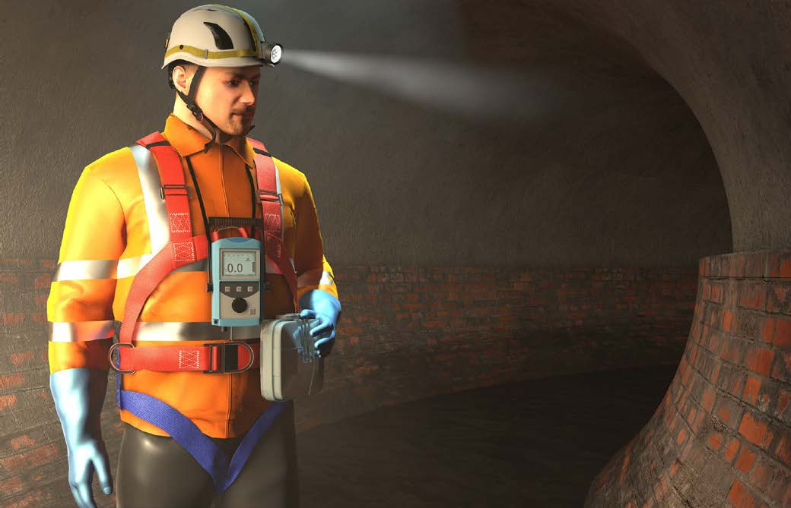
Abb. 1 Persönliche Schutzausrüstungen für Kanalarbeiten
|
Gefährdungen
|
|
PSA schützen bei den jeweils auszuführenden Arbeiten vor den Restgefährdungen, welche durch technische oder organisatorische Schutzmaßnahmen nicht ausreichend minimiert werden können.
Dies können sein:
- Physikalische Gefährdungen: z. B. Absturz, Schneiden, Lärm, UV-Strahlung
- Chemische Gefährdungen: z. B. Faulgase, Motorabgase
- Biologische Gefährdungen: z. B. fäkalhaltiges Abwasser, Aerosole, Schimmelpilze, Vogelkot
- Klimatische Gefährdungen: z. B. Nässe, Hitze und Kälte
Gefährdungen können auch durch unsachgemäße Bereitstellung und falsche Benutzung von PSA entstehen, z.B.:
- falsche Auswahl von PSA und Zusatzausrüstungen,
- Verwendung mehrerer PSA-Arten, welche nicht aufeinander abgestimmt sind,
- verschmutzte, beschädigte oder abgeänderte PSA,
- falsche Konfektionsgröße, abgelaufene Gebrauchsdauer,
- PSA werden nicht den Herstellerangaben entsprechend verwendet,
- unsachgemäßes Anlegen der PSA,
- eigenmächtige Veränderungen der PSA
|
|
Maßnahmen
|
|
Beurteilung der Arbeitsbedingungen und Dokumentation (Gefährdungsbeurteilung)
Voraussetzung für die Auswahl von geeigneten PSA ist die Kenntnis aller am Arbeitsplatz auftretenden Gefährdungen. Dazu gehören auch Gefährdungen, die durch die Tätigkeiten entstehen bzw. die an benachbarten Arbeitsplätzen erzeugt werden.
Wenn PSA zur Minimierung vieler Gefährdungen gleichzeitig verwendet werden müssen, achten Sie darauf, dass die Arten der PSA aufeinander abgestimmt sind und zusammen verwendet werden dürfen (z. B. Helm mit integrierter Schutzbrille und Kapselgehörschutz).
Achten Sie darauf, dass die Gebrauchseigenschaften der PSA auf die Tätigkeit abgestimmt sind und die Beschäftigten durch die PSA nicht unnötig behindert werden.
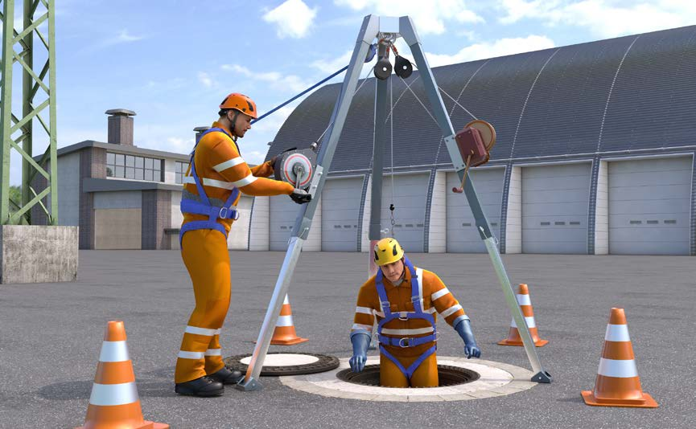
Abb. 2 Verwendung von PSA gegen Absturz und zum Retten
Beschaffung/Bereitstellung
Beschaffen Sie nur PSA, die mit einer CE-Kennzeichnung versehen sind und über eine aussagekräftige Herstellerinformation verfügen. Achten Sie weiterhin darauf, dass die Ersatzteilbeschaffung, die Instandsetzung und die Wartung über einen längeren Zeitraum gesichert sind.

PSA müssen den Beschäftigten individuell passen. Auffanggurte, die nicht auf die Körperform des Benutzers abgestimmt sind oder Schutzhelme, die zu klein oder zu groß sind, beeinträchtigen die Schutzwirkung bzw. führen zu zusätzlichen Gefährdungen der Benutzer. Stellen Sie sicher, dass eine ausreichende Anzahl von PSA für den Zeitraum der Tätigkeit zur Verfügung steht. Beispielsweise kann nach jeder Arbeitsunterbrechung oder bei jedem Wiedereintritt in den Tätigkeitsbereich neue Einwegschutzkleidung notwendig sein.
| |
 |
Hören Sie die Beschäftigten an (z. B. zu Konfektionsgrößen, Hörgangsweiten, Anpassungsmöglichkeiten oder individuellen körperlichen Voraussetzungen), bevor Sie PSA zur Verfügung stellen. Die Tragebereitschaft von PSA ist erfahrungsgemäß größer, wenn die Beschäftigten bei der Auswahl der PSA beteiligt werden (ggf. Anprobe). |
Abb. 3 Fußschutz
Benutzung
Weisen Sie die Beschäftigten an, die PSA bestimmungsgemäß zu benutzen. Dabei ist es hilfreich, auch praktische Übungen durchzuführen. Für einige PSA sind praktische Übungen vorgeschrieben, z. B. PSA gegen Absturz, Atemschutz.
Die Herstellerinformation muss für den Benutzer und die Benutzerin zugänglich sein und beschreibt Verwendungszweck, Einsatzbedingungen, Gebrauchsdauer und Benutzungseinschränkungen der PSA.
PSA müssen vor jedem Einsatz auf mögliche Mängel hin in Augenschein genommen werden.
Ordnungsgemäßer Zustand
PSA müssen regelmäßig auf Vollständigkeit und Beschädigungen überprüft und gegebenenfalls direkt ersetzt werden. Sorgen Sie dafür, dass Instandhaltungsarbeiten und die Überprüfung der Gebrauchstauglichkeit der PSA nach den Angaben der Herstellerinformationen durchgeführt werden. Stellen Sie durch Wartungs-, Reparatur-, Ersatzmaßnahmen und ordnungsgemäße Lagerung sicher, dass die PSA während der gesamten Gebrauchsdauer funktionieren und sich in einem hygienisch einwandfreien Zustand befinden. So ist bei der Reinigung von PSA darauf zu achten, dass die Waschverfahren die Schutzwirkung nicht beeinflussen.
Wenn die Schutzwirkung der PSA im Rahmen der Benutzung/Beanspruchung beeinträchtigt wurde, müssen sie ggf. beim Hersteller erst wieder funktionstüchtig gemacht werden, bevor sie erneut benutzt werden können. Dies ist beispielsweise bei einem Höhensicherungsgerät notwendig, wenn der Sturz einer Person damit aufgefangen wurde.
PSA gegen Absturz und Ertrinken sind zudem mindestens einmal jährlich durch Sachkundige zu prüfen.
|
3.2 Hygiene und Hautschutz
3.2.1 Hygiene
Die Übertragung von Infektionskrankheiten in abwassertechnischen Anlagen können Sie durch geeignete Arbeitsverfahren, Persönliche Schutzausrüstungen sowie Reinigungs- und Desinfektionsmaßnahmen vermeiden.
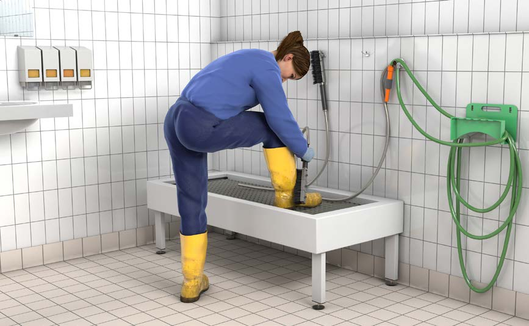
Abb. 4 Die Stiefelwaschanlage sorgt dafür, dass Beschäftigte den Schmutz nicht in die betrieblichen Räume tragen.
|
Gefährdungen
|
|
Ihre Beschäftigten gehen mit Abwasser und Klärschlamm sowie mit verschmutzten Arbeitsgeräten und Ausrüstungsgegenständen um. Dabei können sie in Kontakt mit biologischen Arbeitsstoffen wie Viren, Bakterien, Pilzen, Darmparasiten kommen, die auch in Form von Schwebeteilchen (Aerosolen) vorliegen. Eine Gefährdung besteht auch durch Nagetiere, Vögel oder andere Tiere und deren Ausscheidungen.
Einige Beispiele: Durchfallerkrankungen durch Krankheitskeime aus Fäkalien, Leberentzündung durch Hepatitis-A-Viren, Weilsche Krankheit (Leptospirose), Erkrankungen durch Übertragung von Hantaviren durch Mäuse- und Rattenurin sowie Wundstarrkrampf (Tetanus).
Biologische Arbeitsstoffe können aber nicht nur Infektionen, sondern auch Allergien oder toxische Wirkungen hervorrufen.
Die Gefahr, Krankheitserreger aufzunehmen, besteht
- über den Mund
- durch jeglichen Hand-Mund-Kontakt
- über kontaminierte Kleidung bzw. Persönliche Schutzausrüstung
- durch Essen, Trinken, Rauchen ohne vorherige Reinigung der Hände
- über die Haut oder Schleimhäute
- durch Eindringen bei verletzter oder aufgeweichter Haut
- durch Schmutzspritzer in die Augen
- über die Atemwege
- durch kleinste Tröpfchen oder Aerosole.
Daraus wird ersichtlich: Wie lange und intensiv der Kontakt mit Krankheitserregern ist, hängt von vielen Faktoren ab.
|
|
Maßnahmen
|
|
Hygiene- und Reinigungsplan
Konsequente Sauberkeit schützt Ihre Beschäftigten davor, versehentlich Erreger aufzunehmen. Im Alltag wird Arbeitshygiene jedoch schnell vernachlässigt. Durch einen Hygiene- und Reinigungsplan sorgen Sie für verbindliche Verhaltensregeln – und kommen zugleich Ihren Arbeitsschutzpflichten als Unternehmer oder Unternehmerin nach.
Regeln eines Hygiene- und Reinigungsplans, der auf Ihren Betrieb zugeschnittenen ist, können sein:
- Verschmutzte Arbeitsgeräte und Ausrüstungsgegenstände unmittelbar nach der Tätigkeit reinigen
- Fahrzeugkabinen an jedem Arbeitstag reinigen, z. B. feucht wischen
- Wassertanks, die zur hygienischen Händereinigung auf Fahrzeugen mitgeführt werden, nach jedem Arbeitstag/jeder Schicht entleeren und mit frischem Wasser auffüllen
Der Hygiene- und Reinigungsplan dient zugleich als Grundlage für arbeitsplatzbezogene Unterweisungen Ihrer Mitarbeiterinnen und Mitarbeiter. Diese Aufgabe können Sie selbst übernehmen oder dazu eine kompetente Führungskraft verpflichten. Die Beschäftigten sind ihrerseits verpflichtet, der Hygiene nachzukommen.
| |
|
Planen Sie für die Hygienemaßnahmen ausreichend Zeit in den Abläufen ein und sorgen dafür, dass Ihre Beschäftigten alle notwendigen Arbeitsmittel dafür bereitstehen. |
Bauliche Einrichtungen
Auch bauliche Einrichtungen tragen dazu bei, Ihre Beschäftigten vor Infektionen zu schützen:
- Im Eingangsbereich Ihrer Betriebsgebäude brauchen die Beschäftigten die Möglichkeit, verschmutztes Schuhwerk zu reinigen, z. B. an Fußmatten oder Rosten.
- In den Sozialeinrichtungen sind zudem Reinigungsmöglichkeiten für Stiefel und Schutzkleidung erforderlich.
- Der Schutz Ihrer Beschäftigten erfordert außerdem Waschräume, die mit Duschen und Waschbecken sowie fließendem Warm- und Kaltwasser ausgestattet sind. Ideal sind sogenannte Schwarz-Weiß-Anlagen: zwei Räume, die durch einen Waschraum verbunden sind.
- Für Betriebsstätten, die nur zeitweise besetzt sind, reichen Waschgelegenheiten mit fließendem Warm- und Kaltwasser aus.
- In allen Waschräumen sind Direktspender mit den erforderlichen Reinigungs-, Desinfektions- und Pflegemitteln erforderlich.
Für unterwegs gilt: Wenn Ihre Beschäftigten mobil sind, brauchen sie Waschgelegenheiten mit fließendem, sauberen Wasser sowie Spender für Reinigungsmittel und Einmalhandtücher auf dem Fahrzeug.
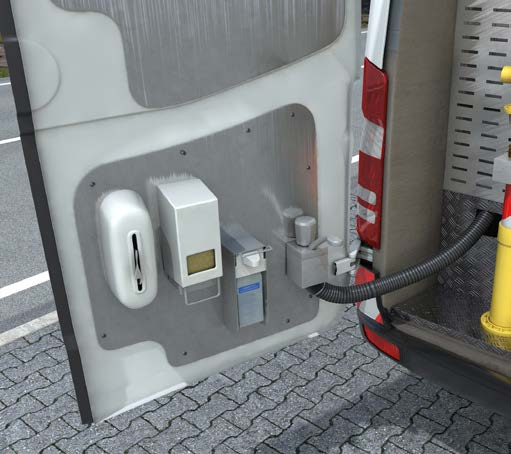
Abb. 5 Hygieneausstattung am Fahrzeug
Muster Reinigungs- und Hygieneplan (gem. § 14 BiostoffV)
Betrieb: ............................................ Abteilung: ............................................ Datum: ............................................ Unterschrift: ............................................
| WAS |
WANN |
WOMIT |
WIE |
WER |
| Kontaminierte Arbeitsmittel |
Nach Kontamination |
- |
|
|
| Schutzkleidung |
wöchentlich |
- |
Wäscherei |
|
Betriebsgebäude
Fußböden |
wöchentlich |
Präparat:
Dosierung: |
|
|
| Fahrzeugkabinen |
arbeitstäglich |
|
|
|
| Sozialräume |
arbeitstäglich |
|
|
|
| Dusch- und Toilettenräume |
arbeitstäglich |
|
|
|
Arbeits- und Schutzkleidung
Verschmutzte Arbeits- und Schutzkleidung darf nicht mit nach Hause genommen werden; sie könnte noch Krankheitserreger enthalten. Deshalb brauchen Ihre Beschäftigten auch Möglichkeiten, ihre Straßenkleidung getrennt davon aufzubewahren. In dem "schwarzen" Raum oder Spind bleibt die verschmutzte Kleidung, in dem "weißen" die privaten Sachen.
Zum Trocknen durchnässter Arbeits- und Schutzkleidung brauchen Ihre Beschäftigten Einrichtungen außerhalb der Aufenthaltsräume, zum Beispiel Trockenräume oder Trockengestelle.
Sorgen Sie dafür, dass verschmutzte Arbeits- und Schutzkleidung gereinigt wird – durch eine Fachfirma oder in betriebseigenen Waschmaschinen.
| |
|
Lassen Sie in Ihren abwassertechnischen Anlagen regelmäßig Ratten und Mäuse als Krankheitsüberträger bekämpfen. |
|
|
Weitere Informationen
|
- DGUV Information 250-011 "Leitfaden für Betriebsärztinnen und -ärzte zur arbeitsmedizinischen Vorsorge und Eignung der Beschäftigten bei Tätigkeiten im Abwasserbereich"
|
3.2.2 Hautschutz
Auf abwassertechnischen Anlagen gibt es zahlreiche Tätigkeiten, bei denen die Haut Ihrer Beschäftigten durch Feuchtigkeit, Schmutz und mechanische Beanspruchung oder UV-Strahlen geschädigt werden kann. Die Folge können akute und chronische Entzündungen sowie allergische Reaktionen und nicht zuletzt Hautkrebs sein.
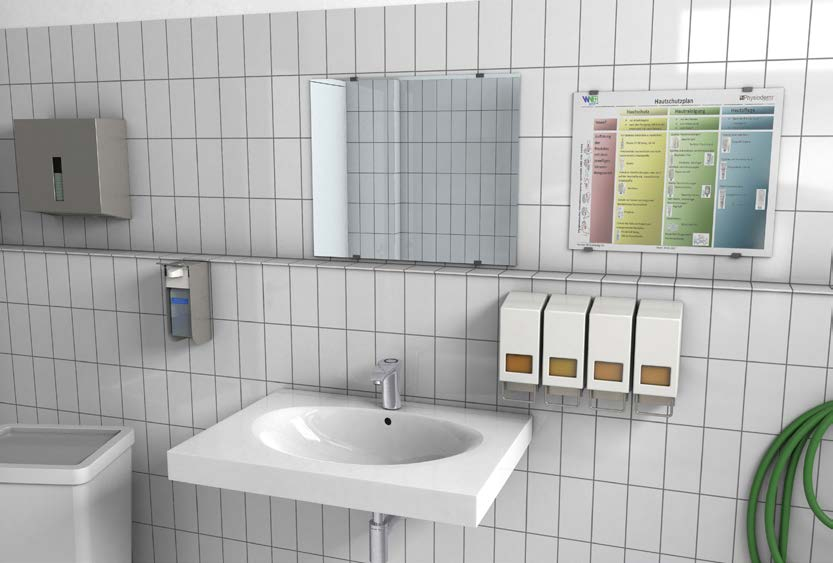
Abb. 6 Direkt am Waschplatz: Hautschutzplan und Spendersystem mit den erforderlichen Produkten
|
Gefährdungen
|
|
Die Haut ist gefährdet durch
- stark anhaftende Verschmutzungen,
- kleinste Verletzungen durch scharfkantige Partikel,
- intensive Hautreinigungsverfahren,
- Feuchtigkeitsstau und Hautaufweichung in Handschuhen und Gummistiefeln.
Eine weitere Gefährdung besteht, wenn Ihre Beschäftigten länger unter freiem Himmel arbeiten. Je nach Hauttyp reagieren Menschen unterschiedlich empfindlich auf die Sonneneinstrahlung. Die ultravioletten Strahlen (UV) können die Haut krankhaft verändern – vom Sonnenbrand bis hin zu Hautkrebs. Beim Arbeiten im Freien sind vor allem Kopf, Nacken, Hände und Unterarme der Sonne ausgesetzt.
|
|
Maßnahmen
|
| |
|
Zum Schutz der Haut ist es bei einigen Tätigkeiten notwendig, Handschuhe als Persönliche Schutzausrüstung zu tragen (siehe Kapitel 3.1 "Persönliche Schutzausrüstung"). |
Schutz der Hände
Um Hauterkrankungen durch Feuchtigkeit und Verschmutzungen vorzubeugen, muss insbesondere die Haut der Hände geschützt werden. Welche Maßnahmen bei welcher Tätigkeit notwendig sind, zeigt der Hautschutzplan. Wirksamer Hautschutz umfasst 3 Stufen:
- Spezieller Hautschutz
Hautschutzmittel sind vor jedem Arbeitsbeginn und nach jeder Pause auf die saubere Haut aufzutragen.
- Gezielte und schonende Hautreinigung
Die Hautreinigung soll gründlich und gleichzeitig hautschonend sein – am bestem das mildeste Mittel verwenden. Ihre Beschäftigten dürfen keinesfalls zu Verdünner, Waschbenzin oder Ähnlichem greifen.
- Wirksame Hautpflege
Zur Hautpflege soll die Haut mit fetthaltigen Hautpflegemitteln nachgefettet werden.
Bringen Sie dort, wo Hautschutzmaßnahmen angezeigt sind, sowohl den Hautschutzplan als auch Spendersysteme für die notwendigen Produkte an.
Die Spender sorgen für eine hygienische und portionierte Entnahme. Zum Trocknen der Hände benötigen Ihre Mitarbeiterinnen und Mitarbeiter Einmalpapierhandtücher.
| |
|
Nutzen Sie für den Hautschutzplan Vorlagen von Herstellern oder Lieferanten der Hautschutzprodukte. Nehmen Sie zudem betriebsärztlichen Rat in Anspruch – im Rahmen der arbeitsmedizinischen Vorsorge und bei Betriebsbegehungen. |
|
Schutz
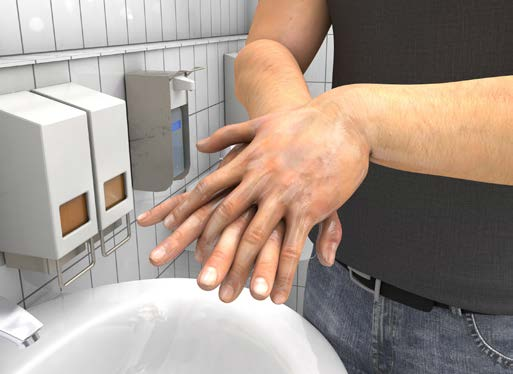
Reinigung
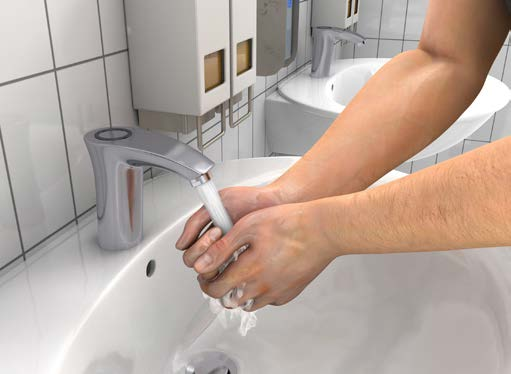
Pflege
Abb. 7 Wirksamer Hautschutz in drei Schritten |
Musterhautschutzplan
Betrieb: ............................................ Abteilung: ............................................ Datum: ............................................ Unterschrift: ............................................
| WAS |
WANN |
WOMIT |
WIE |
WER |
| Hautschutz beim Tragen von flüssigkeitsdichten Handschuhen |
Vor dem Anziehen der Handschuhe Unterhandschuhe aus Baumwolle sind empfohlen |
Hautschutzcreme
Präparat: |
Einreiben |
Alle |
| Händereinigung |
Nach Verschmutzung, nach Arbeitsabschnitten |
Flüssigseife
Präparat: |
Hände unter Warmwasser waschen |
Alle |
| Händepflege |
Nach jeder Händedesinfektion und Reinigung, bei Bedarf |
Handpflegelotion
Präparat:
Dosierung: |
In die trockenen Hände einreiben |
Alle |
| Händedesinfektion |
Nach Bedarf, betrieblicher Vorgabe |
Präparat:
Dosierung:
Einwirkzeit: |
In die trockenen Hände bis zur Trocknung einreiben |
Alle |
Arbeiten im Freien
Sofern es sich organisatorisch einrichten lässt, sollten die Beschäftigten die Zeit der höchsten Sonneneinstrahlung zwischen 11 und 15 Uhr nicht in der Sonne, sondern an schattigen Arbeitsplätzen oder in Gebäuden verbringen.
Wenn Ihre Beschäftigten unter der Sonne arbeiten, sollten sie sich mit körperbedeckender Kleidung und Kopfbedeckung vor UV-Strahlen schützen. Klären Sie über die Gefährdung auf und weisen Sie darauf hin, nicht bedeckte Körperteile wie Hände und Gesicht mit Sonnencreme zu schützen. Geben Sie helle Hüte mit Krempe und Nackenschutz sowie Sonnencreme mit hohem Lichtschutzfaktor (LSF 30) aus.
|
|
Weitere Informationen
|
- DGUV Information 203-085 "Arbeiten unter der Sonne"
- DGUV Information 212-015 "Hautkrankheiten und Hautschutz"
- DGUV Information 250-011 "Leitfaden für Betriebsärztinnen und -ärzte zur arbeitsmedizinischen Vorsorge und Eignung der Beschäftigten bei Tätigkeiten im Abwasserbereich"
|
3.3 Verkehrswege und Arbeitsplätze
3.3.1 Verkehrswege
Wer eine abwassertechnische Anlage betreibt, trägt die Verantwortung dafür, dass sich Beschäftigte – auch von Lieferanten und Fremdfirmen – und andere Externe dort sicher bewegen können.
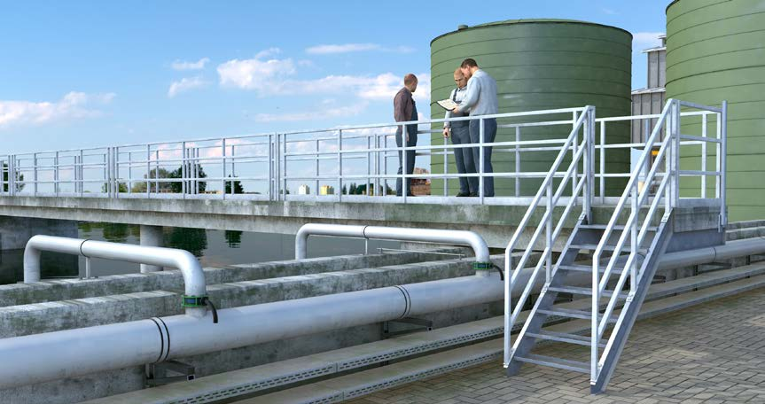
Abb. 8 Geländer sichern Beschäftigte an Treppen und Beckenrändern.
|
Gefährdungen
|
|
Gefährdungen auf innerbetrieblichen Verkehrswegen durch:
- Sturz
- auf rutschigem Untergrund oder verschmutzten Stellen
- über Stolperstellen wie Leitungen, Schläuche oder nicht bündig liegende Gitterroste und Platten
- aufgrund unzureichender Beleuchtung von Wegen, Treppen und Arbeitsflächen
- durch Stolpern aufgrund von ungeeignetem Schuhwerk
- Absturz,
- wenn Absturzstellen baulich nicht gesichert sind
- wenn Handläufe an Treppen fehlen
- wenn Öffnungen im Boden nicht gesichert sind
- Anstoßen,
- wenn Verkehrswege nicht ausreichend breit und hoch sind
- Kollision mit Fahrzeugen,
- wenn Fuß- und Fahrwege nicht getrennt sind
- wenn ohne Einweiser rückwärts gefahren wird
| |
|
Stolpern, Rutschen und Stürzen gehören mit zu den häufigsten Auslösern von – oft folgenschweren – Unfällen. Lassen Sie sich auch sogenannte "Beinahe-Unfälle" melden, damit die Ursachen wie Bodenunebenheiten oder Stolperstellen beseitigt werden. |
|
|
Maßnahmen
|
|
Sichere Wege
Wege, Treppen, Rampen und Podeste Ihrer Anlage haben bei allen Witterungen begeh- oder befahrbar zu sein – oder sie sind abzusperren.
Ein sicheres und übersichtliches Betriebsgelände erreichen Sie durch:
- Trittsicherheit auf allen Wegen
Setzen Sie rutschhemmende und leicht zu reinigende Bodenbeläge ein sowie Rostabdeckungen (zum Beispiel Bewertungsgruppe R 12, Anhang 2 der ASR A1.5/1,2 "Fußböden") ein und vermeiden Sie Wasseransammlungen.
- Gut befestigte Verkehrswege
Dies erreichen Sie mit angemessenen Bodenbelagsarten, durch wassergebundene Decken in wenig befahrenen Bereichen sowie Plattenwege mit dicht aneinander anschließenden Platten.
- Keine Verletzungsgefahr durch Stolperstellen oder Hindernisse
Lassen Sie keine querlaufenden Rohrleitungen oder Schieberbetätigungen auf Verkehrswegen zu, ebenso wenig hereinragende Anlagenteile, Gerinne oder Förderbänder. Überbauen Sie solche Stellen gegebenenfalls mit Brücken.
- Ausreichend bemessene Durchgänge
Sorgen Sie für mindestens 2,1 Meter Höhe und 0,6 Meter Breite (bei Lastenbeförderung mindestens 1,25 Meter) bei Durchgängen von Verkehrswegen.
- Keine Verkehrswege für Kraftfahrzeuge innerhalb explosionsgefährdeter Bereiche
- Instandhaltung und witterungsabhängige Sicherungsmaßnahmen
| |
|
Machen Sie betrieblichen Vorgesetzten und allen Beschäftigten klar, dass Verschmutzungen wie Schlamm oder Wasser auf Fußwegen schnell zu beseitigen sind – am besten von denjenigen, die sie verursacht haben. |
|
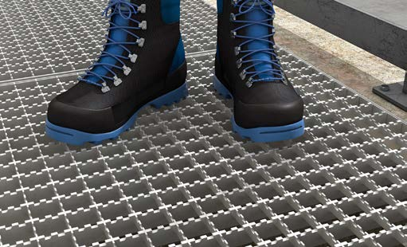
Abb. 9 Rutschhemmender Gitterrost sorgt für Trittsicherheit
Beleuchtung
Sind Wege schlecht zu erkennen, steigt die Unfallgefahr. Sorgen Sie mindestens für die folgenden Beleuchtungsstärken (siehe Anhang 1 und 2 ASR A3.4 "Beleuchtung")
- Für Verkehrsflächen und Flure in Gebäuden:
- Ohne Fahrzeugverkehr 50 Lux
- Im Bereich von Absätzen und Stufen 100 Lux
- Mit Fahrzeugverkehr 150 Lux
- Für Verkehrswege im Freien:
- Wege 5 Lux
- Toranlage 50 Lux
Treppen und Rampen
Die sicherste Art, um Höhenunterschiede zu überwinden, sind Treppen und Rampen. Ideal sind bei Treppen Stufen mit einem Auftritt von 29 Zentimetern und einer Steigung von 17 Zentimetern. Dieses Verhältnis von Auftritt und Steigung ist am sichersten und kostet am wenigsten Kraft (siehe Tabelle 4 ASR A1.8 "Verkehrswege").
Wichtig ist für Sie zu wissen, dass Treppen einen Handlauf haben müssen. Nachrüsten müssen Sie bestehende Treppen auf Ihrem Betriebsgelände und in Gebäuden allerdings nur bei mehr als vier Stufen.
Verzichten Sie auf Ihrem Gelände lieber auf einzelne Ausgleichsstufen – solche Höhenunterschiede werden leicht übersehen. Hier sind Rampen eine Alternative, die allerdings nicht steiler als acht Prozent sein sollen (siehe Tabelle 1 ASR A1.8 "Verkehrswege").
Wo Treppen oder Rampen aus baulichen Gründen nicht eingesetzt werden können, sind Steigleitern oder Steigeisengänge eine Alternative.
3.3.2 Arbeitsplätze
Wenn Sie eine abwassertechnische Anlage betreiben, tragen Sie Verantwortung für sehr unterschiedliche Arbeitsplätze: Neben den Routinetätigkeiten fallen Instandhaltungs-, Bau- und Montagearbeiten an. Ihre Beschäftigten müssen vor allem wissen, wie wechselnde Arbeitsplätze herzurichten sind.
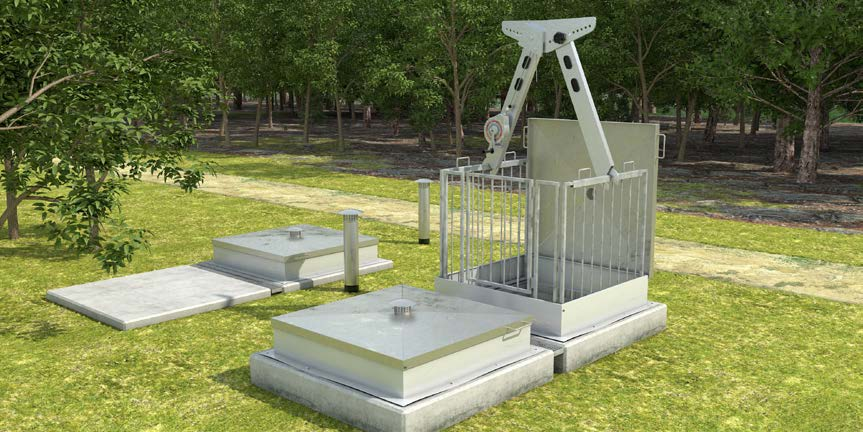
Abb. 10 Schachtabdeckungen aus Edelstahl sichern Öffnungen im Boden. Die Geländer lassen sich aufklappen.
|
Gefährdungen
|
|
Stürze, auch schon von geringer Höhe, sind oft mit langwierigen Verletzungen verbunden oder enden sogar tödlich. Dieses Risiko besteht überall dort, wo Geländer, Umwehrungen oder Abdeckungen fehlen:
- An höher gelegenen Arbeitsplätzen, beispielsweise bei Wartungs- und Steuerungsplätzen sowie auf Arbeitsbühnen
- An Öffnungen und Vertiefungen, z. B. an Zugängen zu unterirdischen Bauwerken, Montageöffnungen, Schächten, Pumpensümpfen
- An Arbeitsplätzen mit angrenzenden Becken, Gerinnen oder Behältern mit Stoffen, in denen man versinken kann wie in Abwasser und Schlamm.
Des Weiteren besteht Sturz- oder Absturzgefahr z. B.:
- Auf Treppen, Leitern und Steigeisengängen
- Beim unsachgemäßem Umgang mit Fahrgerüsten und Hubarbeitsbühnen
- Wenn persönliche Schutzausrüstungen gegen Absturz nicht benutzt werden, z. B. in Verbindung mit Steigschutzeinrichtungen.
|
|
Maßnahmen
|
|
Es liegt in Ihrer Verantwortung als Unternehmer oder Unternehmerin, Arbeitsplätze und Verkehrswege so anzuordnen und einzurichten, dass dort ein sicheres Arbeiten möglich ist. Wo Absturzgefahr droht oder besondere Gefahrenbereiche angrenzen, sind Sicherungen gegen Absturz erforderlich.
Feste und bewegliche Absturzsicherungen
Als feste Absturzsicherungen eignen sich beispielsweise Geländer von mindestens 1,0 m, beziehungsweise 1,1 m Höhe oder entsprechend hochgezogene Umfassungswände an Becken.
Wo feste Geländer oder Umwehrungen fehlen, brauchen Ihre Beschäftigten bewegliche Absturzsicherungen, Abdeckungen oder Persönliche Schutzausrüstungen gegen Absturz.
Bewegliche Absturzsicherungen kommen an Zugängen zu Leitern, Treppen oder an Montageöffnungen zum Einsatz. Sie werden entweder auf- und zugeklappt, geschoben oder aus- und eingesteckt. Stellen Sie sicher, dass diese Sicherungen eingerichtet werden, bevor die Montageeinrichtung geöffnet wird.
| |
|
Machen Sie klar: Bewegliche Geländer dürfen nie offen stehen bleiben. Zudem muss allen klar sein, dass Ketten und Seile keine ausreichende Sicherheit gegen Absturz bieten. |
Abdeckungen
Eine weitere Möglichkeit, Ihre Beschäftigten vor Abstürzen zu schützen, sind Abdeckungen.
Damit sie konsequent benutzt werden und ihren Zweck erfüllen, sollten sie
- sicher zu handhaben und tragfähig sein,
- von gesicherten Standplätzen aus geöffnet werdenkönnen,
- gegen unbeabsichtigtes Verschieben und Abheben gesichert sein,
- aufgeklappt festgestellt werden können.
Stellen Sie sicher, dass Ihre Beschäftigten geöffnete Ein-stiege gegen Absturz sichern, beispielsweise durch Ab-sperrung. Dies gilt auch, wenn nicht gearbeitet wird.
| |
|
Schwere Abdeckungen, die von Hand zu betätigen sind, müssen beispielsweise mit Gewichtsausgleich, hydraulisch betätigten Hubvorrichtungen oder Gasdruckfedern ausgestattet sein. |
Absturzsicherungen an Becken und GerinnenBecken und Gerinne brauchen Absturzsicherungen. Hiervon gibt es einige wenige Ausnahmen: unterirdische Gerinne mit einem Gefälle bis 1 : 10 oder einer Absturzhöhe von weniger als 1,0 m, wenn keine Gefährdungen zu erwarten sind.
Zur Sicherung stehen Ihnen mehrere Möglichkeiten offen: bei Schrägen mit einer Böschungsneigung bis 1 : 1 beispielsweise Bepflanzungen.
Sind an oberirdischen Gerinnen mit weniger als 1,0 m Absturzhöhe keine Gefährdungen infolge eines Absturzes zu erwarten, müssen die Umfassungswände mindestens 30 cm aus dem Boden hervorstehen. Bestehen zusätzliche Gefährdungen z. B. aufgrund hoher Strömungsgeschwindigkeit, durch die Personen abgetrieben werden können, oder Stürze auf scharfkantige Einbauten, müssen Sicherungen wie Abdeckungen oder Geländer vorhanden sein.
Persönliche Schutzausrüstungen gegen Absturz
Wenn Personen an einer Absturzkante tätig werden müssen, die nicht durch Geländer zu sichern ist, bleibt als Maßnahme die Persönliche Schutzausrüstung gegen Absturz. Bedenken Sie, dass Mitarbeiterinnen und Mitarbeiter dazu besondere Unterweisungen brauchen (siehe Kapitel 3.1 "Persönliche Schutzausrüstung").
Maßnahmen an hoch gelegenen Arbeitsplätzen
Um an hoch gelegene Arbeitsplätze zu gelangen, kommen Fahrgerüste und Hubarbeitsbühnen und Leitern zum Einsatz.
Arbeitskörbe
Nur Arbeitskörbe oder andere geeignete Personenaufnahmemittel für Hebezeuge einsetzen.
Fahrgerüste
- Für den Aufbau und die Benutzung von Fahrgerüsten die dazugehörigen Aufbau- und Verwendungsanleitungen beachten.
- Fahrgerüste nur auf tragfähigem und ebenem Untergrund errichten. Die Räder und Fußplatten dürfen nicht einsinken.
- Durch ausreichende Ballastierung oder Anbringen von Auslegern für Standsicherheit sorgen.
- Nur auf der Innenseite aufsteigen.
- Beim Arbeiten auf dem Fahrgerüst alle Fahrrollen feststellen.
- Vor dem Verfahren alle losen Teile sichern.
- Beim Verfahren darf sich niemand auf dem Fahrgerüst aufhalten.
Hubarbeitsbühnen
- Hubarbeitsbühnen nur nach schriftlicher Beauftragung und Unterweisung nutzen.
- Eine an der Hebebühne angebrachte Kurzfassung der Betriebsanleitung mit den wichtigsten Angaben für einen sicheren Betrieb beachten.
- Standsichere Aufstellung: Vor Inbetriebnahme der Hebebühne die ordnungsgemäße Auflage der Abstützungen auf geeignetem Untergrund überprüfen.
- Hebebühne gegen Verkehrsgefahren sichern, wenn diese in den Verkehrsraum von Fahrzeugen hineinragt oder darin aufgestellt wird.
Leitern
Insbesondere bei Arbeiten auf Leitern besteht eine hohe Absturzgefahr. Daher sollten Ihre Mitarbeiter Leitern nur für Arbeiten in geringem Umfang benutzen. Die folgende, sichere Arbeitsweise sollte für Ihre Mitarbeiterinnen und Mitarbeiter selbstverständlich sein.
Für alle Leitern gilt:
- Standsicher und sicher begehbar aufstellen, z. B. bei Leitern ab 3 m Länge ein verbreiterter Leiterfuß.
- Gegen Einsinken durch lastverteilende, tragfähige Unterlagen sichern.
- In Verkehrswegen so aufstellen, dass sie nicht angefahren oder angestoßen werden können.
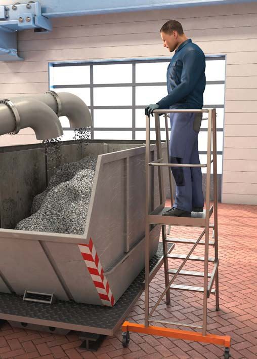
Abb. 11 Sicherer Standplatz am Container auf einer Podestleiter
Für Anlegeleitern
- Im richtigen Winkel angelegen (65–75°).
- Gegen Abrutschen durch Anbinden oder Einhaken des Leiterkopfes sichern.
- Nur an sichere Stützpunkte anlegen, nicht an Glasscheiben oder unverschlossenen Türen.
- Mindestens einen Meter über die Austrittstellen hinausragen lassen.
- Bei Bau- und Montagearbeiten nicht höher als fünf Meter über der Aufstellfläche auf der Leiter arbeiten.
Für Stehleitern
- Spreizsicherungen spannen.
- Stehleitern ohne Haltevorrichtung nur bis zur jeweils drittobersten Sprosse/Stufe betreten.
- Nicht seitlich übersteigen.
|
3.4 Bewegen von Lasten
3.4.1 Einsatz von Hebezeugen
Hebezeuge erleichtern es, Lasten zu bewegen – ein großes Plus für die Gesundheit Ihrer Beschäftigten. Die Leichtigkeit, mit der Lasten angehoben werden können, täuscht jedoch über das tatsächliche Gewicht hinweg – und Gefährdungen werden unterschätzt. Klären Sie deshalb Ihre Beschäftigten darüber auf, worauf beim Umgang mit Hebezeugen, Lastaufnahme- und Anschlagmitteln zu achten ist.
|
Weitere Informationen
|
- DGUV Information 209-013 "Anschläger"
|
|
Gefährdungen
|
|
Gefährdungen bei Arbeiten mit Hebezeugen entstehen meist, wenn Hebezeuge unsachgemäß betrieben werden – also entgegen der Betriebsanleitung.
Gefährlich kann es werden, wenn
- Hebezeuge überlastet oder nicht ausreichend tragfähig sind,
- Lasten unsachgemäß angeschlagen werden und sich aushängen oder lösen,
- Lasten während des Transportes verrutschen oder herabfallen,
- Seile, Ketten oder Hebebänder schadhaft sind,
- sich Personen im Gefahrenbereich angehobener Lasten aufhalten,
- erforderliche Prüfungen auf sichere Funktion nicht regelmäßig durchgeführt werden,
- erforderliche Persönliche Schutzausrüstungen nicht getragen werden.
|
|
Maßnahmen
|
|
In Ihrem Unternehmen dürfen nur Hebezeuge, Lastaufnahmemittel und Anschlagmittel (Schachtringgehänge, Seile, Ketten, Hebebänder) zum Einsatz kommen, welche die grundlegenden Beschaffenheitsanforderungen für Sicherheit und Gesundheitsschutz des Anhanges I der europäischen Maschinenrichtlinie 2006/42/EG erfüllen.
Achten Sie beim Erwerb eines solchen Arbeitsmittels auf eine entsprechende Konformitätserklärung des Herstellers. Mit dem Kauf erhalten Sie eine CE-Konformitätskennzeichnung und eine Betriebsanleitung.
Damit Ihre Beschäftigten eine Last ohne Schaden für Mensch und Material bewegen können, brauchen Sie Informationen zu dessen Gewicht und Schwerpunkt.
Ist das Gewicht nicht bekannt und weder auf dem Gut selbst noch auf den Transportpapieren vermerkt, muss es durch Wiegen oder eine Berechnung ermittelt werden.
Bei ungleichmäßiger Form einer Last lässt sich die Schwerpunktlage nicht immer abschätzen. Erst wenn der Schwerpunkt bekannt ist, lässt sich der Lasthaken in die richtige Position bringen.
Hebezeuge
- Mit der Aufstellung und dem selbstständigen Betrieb eines Hebezeuges, sowie mit dem Einsatz von Lastaufnahmeeinrichtungen beauftragte Personen müssen im sicheren Umgang unterwiesen sein.
- Die zulässige Tragfähigkeit eines Hebezeuges muss angegeben sein und darf nicht überschritten werden.
- Bewegte Teile von Hebezeugen müssen zu festen Teilen der Umgebung zur Vermeidung von Quetsch- und Schergefahren einen Sicherheitsabstand von mindestens 50 cm haben.
- Anschläger und Bediener des Hebezeuges müssen sich verständigen.
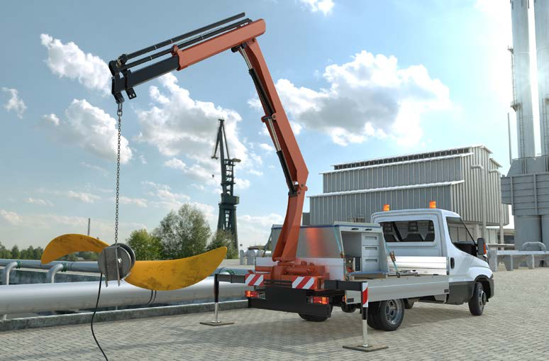
Abb. 12 Ein mobiler Kran kann an verschiedenen Einsatzstellen eingesetzt werden
Kraftbetätigte Bewegungen der Hebezeuge müssen durch selbsttätig wirkende Notendhalteeinrichtungen begrenzt sein.
| |
|
Erforderlich ist, dass die vom Hersteller mitgelieferte Betriebsanleitung dem Bedienpersonal bekannt und direkt am Hebezeug verfügbar ist – am besten eine Kopie laminieren und an das Hebezeug hängen. Auf der Anleitung sind grundlegende Informationen zu finden wie die zulässige Tragfähigkeit, die keinesfalls überschritten werden darf. |
Lastaufnahmemittel
Mithilfe von z. B. Traversen, Kübeln, Greifern, Gabeln oder Palettengeschirren kann jedes Gut sicher aufgenommen, gehalten und wieder abgesetzt werden. Indem Sie in passende Lastaufnahmemittel investieren, vermeiden Sie gefährliche Improvisationen. Wichtig ist auch hier, die Tragfähigkeit zu kennen und nicht zu überschreiten.
Anschlagmittel
Anschlagmittel haben unterschiedliche Merkmale, die Ihre Mitarbeiterinnen und Mitarbeiter kennen sollten:
- Drahtseile sind überwiegend universell einsetzbar.
- Ketten zeichnen sich durch Robustheit und lange Lebensdauer aus.
- Hebebänder besitzen im Verhältnis zu ihrem Eigengewicht eine hohe Tragfähigkeit. Sie eignen sich besonders für den Transport von Lasten mit empfindlicher Oberfläche.
- Lasthaken müssen mit einer Hakensicherung ausgerüstet sein, damit sich das Anschlagmittel nicht aushängen kann.
Über die Tragfähigkeit geben Tabellen zum Beispiel in Abhängigkeit von der Anschlagart Auskunft. Bevor mit dem Anschlagen begonnen wird, gilt es erstens, die für Kopf, Hände und Füße erforderliche Persönliche Schutzausrüstung anzulegen. Zweitens kommt kein Anschlagmittel ohne Sichtprüfung zum Einsatz.
Bevor dann die Last angehoben wird, ist der Gefahrenbereich zu verlassen, ebenso beim Absetzen. Stellen Sie sicher, dass geeignete Hilfsmittel vorhanden sind, beispielsweise Unterleghölzer, und die Last gegen Umfallen, Auseinanderfallen, Abgleiten und Abrollen gesichert werden kann.
- Bei Seilen, Ketten und Hebebändern darf ein Neigungswinkel von 60° nicht überschritten werden. Je größer der Neigungswinkel, desto größer die Kräfte im Strang.
- Beim Anschlagen mit mehreren Strängen dürfen nur zwei Stränge als tragend angenommen werden.
- Lasten dürfen beim Transport nicht verrutschen oder herabfallen.
- Vorgegebene Anschlagpunkte benutzen lassen, z. B. Ösen an Maschinen.
- Lasten so anschlagen lassen, dass Schrägzug ausgeschlossen ist.
- Festsitzende Lasten dürfen nicht losgerissen werden.
- Anschlagmittel nur bis zur ausgewiesenen Last benutzen.
- Die richtige Benutzung von Anschlagmitteln schriftlich beschreiben und trainieren.
|
3.4.2 Heben und Tragen
In abwassertechnischen Anlagen sind oft Lasten zu bewegen. Auf Dauer ist das sehr fordernd für das Muskel- und Skelett-System Ihrer Beschäftigten. Natürlich hängt es von der Leistungsfähigkeit und dem Gesundheitszustand Ihrer Mitarbeiterinnen und Mitarbeiter ab, wie sie diese Belastungen verkraften. Auf jeden Fall liegt es in Ihrer Verantwortung, dass Ihre Beschäftigten Lasten heben und tragen können, ohne ihrer Gesundheit zu schaden. Sicherheitstechnische oder arbeitsmedizinische Beratung hilft Ihnen dabei, gute Lösungen für Ihren Betrieb zu finden.
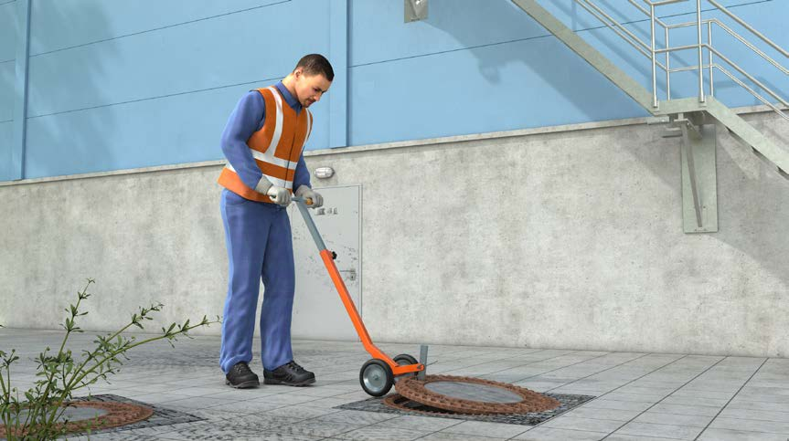
Abb. 13 Dank des Schachtdeckelhebers vervielfacht sich die eingesetzte Muskelkraft.
|
Weitere Informationen
|
- DGUV Information 208-033 "Belastungen für Rücken und Gelenke – Was geht mich das an?"
- Handlungsanleitung zur Beurteilung der Arbeitsbedingungen beim Heben und Tragen von Lasten, LASI-Veröffentlichung Nr. 9
- Handlungsanleitung zur Beurteilung der Arbeitsbedingungen beim Ziehen und Schieben von Lasten, LASI-Veröffentlichung Nr. 29
|
|
Gefährdungen
|
|
Heben und Tragen von Lasten beansprucht den Körper, insbesondere
- Skelett (Wirbelsäule, Gelenke),
- Muskulatur (Oberschenkel, Rücken),
- Herz-Kreislauf-System (Herz, Gefäße, Lunge).
Häufiges Heben und Tragen führt zu einer stärkeren Belastung der Muskulatur der Arme und Beine sowie zeitweise sehr hohen Druck auf die Wirbelsäule. Beachten Sie, dass aus dem Bewegen vieler Lasten Ermüdungserscheinungen und Schädigungen des Stütz- und Bewegungsapparates Ihrer Beschäftigten folgen können, bis hin zu Rücken- und Gelenkerkrankungen.
Die Beanspruchungen der Wirbelsäule sind umso höher, je größer die Last ist und je weniger ergonomisch die Beschäftigten damit umgehen. Beim Heben mit gebeugtem Rücken werden die Bandscheiben keilartig verformt bzw. sind sie insbesondere an den Kanten hohem Druck und großer Zugspannung ausgesetzt. Die Folge ungleichmäßiger Belastung der Bandscheiben kann z. B. ein Bandscheibenvorfall sein.
Beim Anheben, Tragen und Absetzen von Lasten besteht zudem die Gefahr von äußeren Verletzungen
- beim Anfassen von scharfen Kanten und Graten,
- indem glitschige oder fettige Last heraus- oder abrutscht,
- durch Einklemmen und Quetschen der Hände,
- durch Hochschlagen von ungeeigneten oder falsch benutzten Hebehilfen,
- weil Absetzflächen nachgeben,
- durch Nachrutschen oder Kippen von instabil gelagertem oder gestapeltem Gut.
|
|
Maßnahmen
|
|
Entscheidend ist die Frage: Wie viel Last können Sie einem Mitarbeiter oder einer Mitarbeiterin zumuten? Die Antwort hängt vom Alter, Geschlecht und Muskelkraft der Person ab, die Sie mit der Arbeit beauftragen wollen.
Diese individuellen Faktoren müssen passen zu
- Arbeitsform und -ablauf,
- Form und Griffigkeit der Last,
- aufzuwendende Hubkräfte in Abhängigkeit von der Hubhöhe,
- Arbeitsgeschwindigkeit,
- Häufigkeit des Lastvorganges.
Konkrete Grenzwerte für das Handhaben von Lasten gibt es in der Lastenhandhabungsverordnung nicht. Bei der Gefährdungsbeurteilung unterstützt die Leitmerkmalmethode des Länderausschusses für Arbeitsschutz und Sicherheitstechnik:
- Bei der Leitmerkmalmethode Heben, Tragen und Halten von Lasten (LV 9) werden die Zeitanteile, das Lastgewicht, die Körperhaltung und Ausführungsbedingungen (Bewegungsfreiheit) gewichtet und anschließend bewertet.
- Bei der Leitmerkmalmethode Ziehen, Schieben von Lasten (LV 29) werden darüber hinaus die Positioniergenauigkeit und die Bewegungsgeschwindigkeit der Last berücksichtigt.

Abb. 14 Beim Heben mit gestrecktem Rücken werden die Bandscheiben gleichmäßig beansprucht.
Lasten ergonomisch bewegen
Ergonomisches Anheben, Tragen und Absetzen von Lasten spart Kraft und schützt vor Überbeanspruchung sowie inneren und äußeren Verletzungen. Wo es sich nicht durch Organisation oder technische Hilfsmittel vermeiden lässt, dass Mitarbeiterinnen und Mitarbeiter Lasten bewegen, sollten sie im ergonomischen Heben und Tragen geschult sein.
So funktioniert gesundheitsgerechtes Heben und Tragen:
- Die Lasten möglichst mit geradem Rücken und angespannter Bauchmuskulatur ruckfrei aus der Hocke anheben und absetzen
- Die Last möglichst in Tragehöhe aufnehmen
- Beim Tragen die Last möglichst nahe am Körper und mit senkrechten Armen halten
- Hohlkreuz und Verdrehen der Wirbelsäule vermeiden
- Den Körper möglichst gleichmäßig belasten

Abb. 15 Mit dem Formblatt der Leitmerkmalmethode kommen Sie zu klaren Einschätzungen der Belastung. (Quelle: BAuA)
| |
|
Es gibt Dienstleister, die Rückenschulkurse in Betrieben anbieten. Lassen Sie sich arbeitsmedizinisch beraten. |
Transport mit einfachen Hilfsmitteln
Entlasten Sie Ihre Beschäftigten, indem Sie ihnen Hilfsmittel zum Anheben, Bewegen und Absetzen von Lasten zur Verfügung stellen. Sie sollen ein geringes Eigengewicht haben und einfach zu bedienen sein. Wenn die Lasten sicher aufgenommen und festgehalten werden, sinkt auch die Gefahr, sich die Hände durch Schnitte oder Quetschungen zu verletzen.
Ein Beispiel für ein geeignetes Hilfsmittel ist der Schachtdeckelheber: Dank kurzem Last- und langem Kraftarm wirkt ein Vervielfachen der Muskelkraft beim Anheben.
Wichtig ist für Ihre Beschäftigten, den Hebel gut festzuhalten, damit er nicht samt Last zurückschlägt. Weitere Beispiele, die für Entlastung sorgen, sind handbetriebene Transportmittel wie Sackkarren und Gabelhubwagen.
| |
|
Mehrere Beschäftigte können sich auch gegenseitig helfen, um die Last zu verteilen. Dabei gibt eine Person die Anweisungen. |
|
3.5 Sicherer Umgang mit Gefahrstoffen
Gefahrstoffe werden auf abwassertechnischen Anlagen in verschiedener Weise und unterschiedlichem Ausmaß verwendet. Als Unternehmerin oder Unternehmer tragen Sie die Verantwortung, dass dadurch weder Beschäftigte noch die Umwelt zu Schaden kommen. Stellen Sie deshalb sicher, dass Ihre Beschäftigten wissen, wie sie Gefahrstoffe erkennen und was sie bei Tätigkeiten mit Gefahrstoffen zu beachten haben.
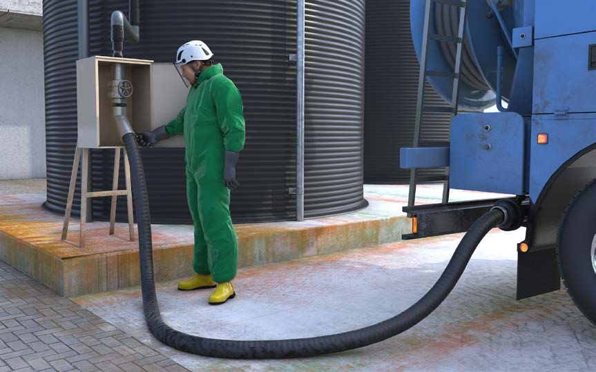
Abb. 16 Bei der Anlieferung von Fällmitteln sind umfangreiche Schutzmaßnahmen angezeigt.
|
Weitere Informationen
|
- DGUV Information 213-850 "Sicheres Arbeiten in Laboratorien"
- Einfaches Maßnahmenkonzept Gefahrstoffe (EMKG) der Bundesanstalt für Arbeitsschutz und Arbeitsmedizin (BAuA)
|
|
Gefährdungen
|
|
Gefährdungen bei Tätigkeiten mit Gefahrstoffen entstehen für Ihre Beschäftigten insbesondere durch:
- akut toxische Wirkung nach inhalativer oder dermaler Einwirkung,
- Ätz- oder Reizwirkung auf Haut und Schleimhaut, insbesondere die Augen,
- sensibilisierende und allergische Wirkung auf die Atemwege und die Haut,
- gesundheitsschädliche Wirkung,
- Ersticken durch Sauerstoffmangel,
- Belastungen der Atemwege durch Staub,
- versehentliches Verschlucken von Gefahrstoffen, z. B. beim Berühren des Mundes mit der kontaminierten Hand,
- Hautresorption von Gasen, Dämpfen, Schwebstoffen oder Flüssigkeiten,
- keimzellmutagene, karzinogene oder reproduktionstoxische Stoffe.
Außerdem können Gefährdungen durch Brand und Explosion sowie durch chemische Reaktion gegeben sein.
Beispiele für typische Gefahrstoffe auf abwassertechnischen Anlagen sind:
- Gase und Dämpfe wie
- Methan, Schwefelwasserstoff, Kohlendioxid aus Faulprozessen
- aus unzulässig eingeleiteten brennbaren Flüssigkeiten wie Benzin und Lösemittel
- Ammoniak und Schwefelwasserstoff, entstanden bei der Schlammentwässerung in Kammerfilterpressen unter Einsatz von Kalk und Eisensalzen (z. B. Eisen(lll)-chlorid),
- Schwebstoffe, z. B. Aerosole, Schweißrauche, Farbnebel, Kalkstaub,
- Flüssigkeiten, z. B. Flockungs- und Fällungsmittel, Stabilisierungsmittel, Säuren, Laugen, Reinigungsmittel und andere Betriebsstoffe,
- Feststoffe, z. B. Salze und Kalk.
|
|
Maßnahmen
|
|
Auf Grundlage der Gefährdungsbeurteilung leiten Sie Maßnahmen ab, um Ihre Beschäftigten vor gesundheitlichen Folgen zu schützen. Lassen Sie sich dabei von Ihrer fachkundigen Sicherheitsfachkraft und Ihrem Betriebsarzt oder Betriebsärztin unterstützten.
Ermitteln
Ermitteln Sie zunächst, welche auf der abwassertechnischen Anlage eingesetzten Stoffe und Produkte Gefahrstoffe sind. Die Kennzeichnungen auf den Gebinden und die Sicherheitsdatenblätter geben Ihnen Hilfestellung. Sicherheitsdatenblätter erhalten Sie von den Herstellern oder Lieferanten.
Beachten Sie, dass Gefahrstoffe auch durch Arbeitsprozesse entstehen oder frei werden können, beispielsweise im Faulprozess Methan, Kohlendioxid und Schwefelwasserstoff.
Beurteilen und Dokumentieren
Beurteilen und dokumentieren Sie die von den Gefahrstoffen ausgehenden Gefährdungen. Hilfestellung geben Ihnen die TRGS 400, 401 und 402 sowie das EMKG.
Führen Sie über alle verwendeten Gefahrstoffe, bei deren Verwendung nicht nur eine geringe Gefährdung besteht, ein Verzeichnis mit folgende Informationen: Bezeichnung des Gefahrstoffs, Einstufung des Gefahrstoffs oder Angaben zu den gefährlichen Eigenschaften, Menge und Arbeitsbereich.
Ersetzen
Ersetzen Sie Produkte, die Gefahrstoffe enthalten, durch solche, von denen kein oder ein geringeres gesundheitliches Risiko ausgeht.
Weiteres Vorgehen
Für Tätigkeiten mit Gefahrstoffen erstellen Sie Betriebsanweisungen. Darin beschreiben Sie die möglichen Gefahren, die Schutz- und Hygienemaßnahmen sowie die Verhaltensregeln. Auf Grundlage dieser Betriebsanweisungen unterweisen Sie Ihre Beschäftigten.
Abb. 17 Gefahrstoffe – hier im Labor – müssen in Gebinden aufbewahrt und ausreichend gekennzeichnet sein.
Achten Sie darauf, dass die Gefahrstoffe (z. B. Reinigungsmittel, Betriebsstoffe) sachgerecht gekennzeichnet, gelagert und entsorgt werden.
Legen Sie die arbeitsmedizinische Vorsorge in Zusammenarbeit mit dem Betriebsarzt fest.
Beachten Sie unbedingt die Beschäftigungsbeschränkungen für Jugendliche, werdende oder stillende Mütter.
Stellen Sie Ihren Beschäftigten geeignete Persönliche Schutzausrüstung (siehe auch Kapitel 3.1 "Persönliche Schutzausrüstung") zur Verfügung. Schutz gegenüber Gefahrstoffen können chemikaliendichte Handschuhe, eine Schutzbrille und gegebenenfalls eine Schutzschürze bieten.
Erste-Hilfe-Einrichtungen, beispielsweise zur Spülung der Augen, gehören an den Arbeitsplatz.
Spezielle Gefahrstoffaspekte auf abwassertechnischen Anlagen
Die Gefahrstoffbelastung der Beschäftigten wird erheblich reduziert, wenn Prozesse in geschlossenen Systemen gefahren werden. Dies gilt z. B. für Dosieranlagen von Eisensalzlösungen sowie Messstationen. Lüftungsmaßnahmen haben Vorrang vor dem Einsatz von Atemschutzgeräten. Dieses gilt insbesondere für Kanalsysteme, Einlaufbauwerke und die Schlammentwässerung.
Wird im Betriebslabor über die üblichen Standarduntersuchungen beispielsweise mit Küvettentests in geschlossenen Systemen hinausgehender Umgang mit Gefahrstoffen erforderlich, prüfen Sie anhand der DGUV Information 213-850 "Sicheres Arbeiten in Laboratorien", ob zusätzliche Schutzmaßnahmen notwendig sind.
| |
|
Beachten Sie: Schutzmaßnahmen gegen Explosionsgefahren und gegenüber Faulgas finden Sie in den Kapiteln 3.6, 3.8.3 und 3.8.4. |
|
3.6 Umgang mit elektrischen Betriebsmitteln
Bei der Benutzung elektrischer Betriebsmittel in abwassertechnischen Anlagen ist aufgrund begrenzter Bewegungsfreiheit oder aufgrund arbeitsbedingter Zwangshaltung in leitfähiger Umgebung mit erhöhter elektrischer Gefährdung zu rechnen. Ihre Beschäftigten müssen die dafür erforderlichen Schutzmaßnahmen kennen und wissen, was beim Umgang mit elektrischen Betriebsmitteln zu beachten ist.
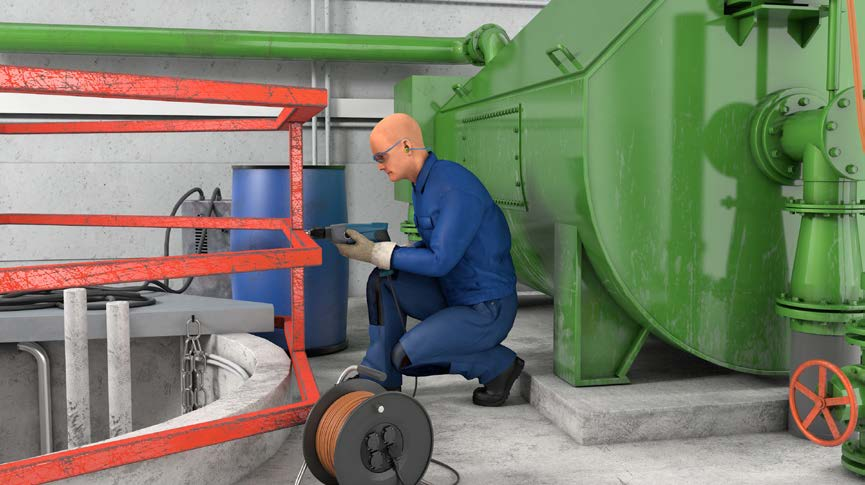
Abb. 18 Elektrische Betriebsmittel müssen geprüft und für die Einsatzbedingungen geeignet sein.
|
Gefährdungen
|
|
Gefährdungen durch elektrischen Strom entstehen durch unsachgemäßen Umgang oder mangelnde Instandhaltung:
- wenn Gerätegehäuse, Isolierungen und Zuleitungen beschädigt, oder Steckvorrichtungen schadhaft sind.
- wenn elektrische Betriebsmittel zu stark beansprucht oder nicht ihrem Verwendungszweck entsprechend eingesetzt werden,
- wenn elektrische Geräte in feuchtem Zustand oder mit nassen Händen, Füßen oder feuchter Kleidung bedient werden,
- wenn regelmäßige Prüfungen nicht ordnungsgemäß durchgeführt werden.
Erhöhte elektrische Gefährdung besteht
- in Räumen abwassertechnischer Anlagen, die feucht oder nass sind,
- in engen, gut leitenden Räumen, z. B. in Metallbehältern, Schächten und Kanälen,
- auf Stahlkonstruktionen, z. B. Podeste, Brücken und Stegen.
|
|
Maßnahmen
|
|
Gefährdungsbeurteilung
Stellen Sie in der Gefährdungsbeurteilung fest, welche elektrischen Gefährdungen im Arbeitsbereich auftreten.
Sichere Anschlusspunkte
Verwenden Sie zum Betrieb Ihrer elektrischen Arbeitsmittel nur geprüfte Anschlusspunkte mit 30-mA-Fehlerstrom-Schutzeinrichtungen.
Beachten Sie, dass beim Einsatz frequenzgesteuerter Arbeitsmittel, z. B. Krane, und Pumpen, allstromsensitive Fehlerstrom-Schutzeinrichtungen (Typ B) zum Einsatz kommen müssen.
Sichere Arbeitsmittel
Verwenden Sie nur Arbeitsmittel, die für den gewerblichen Einsatz geeignet sind und der Beanspruchung am Arbeitsplatz genügen.
| |
|
Verwenden Sie vorzugsweise Handgeräte der Schutzklasse II, welche auch für den rauen Betrieb geeignet sind und erforderlichenfalls einen Nässeschutz aufweisen oder Schutzklasse III (Schutzkleinspannung). |
 |
Abb. 19 Symbol für doppelte oder verstärkte Isolation (Schutzklasse II) |
 |
Abb. 20 Mit dem Hammersymbol werden Betriebsmittel gekennzeichnet, welche für den "rauen Betrieb" geeignet sind. |
 |
Abb. 21 Symbol für Schutzklasse III |
Setzen Sie nur bewegliche Leitungen vom Typ H07RN-F oder H07BQ-F ein. Eine Ausnahme stellen Geräteanschlussleitungen bis 4 m Länge dar, hier sind auch Leitungen vom Typ H05RN-F oder H05BQ-F geeignet. Achten Sie bei Leitungsrollern zusätzlich darauf, dass Tragegriff, Kurbelgriff und Trommel aus Isolierstoff bestehen oder mit Isolierstoff umhüllt sind und mindestens Schutzart IP 44 erfüllen.
| |
|
Einen sehr guten Schutz gegen elektrische Gefährdungen bietet die Verwendung von Elektrohandmaschinen mit Akku. |
Unterweisen Sie Ihre Beschäftigten im Umgang mit den Arbeitsmitteln anhand Ihrer Betriebsanweisungen. Dokumentieren Sie die Unterweisungen.
Sorgen Sie dafür, dass die Arbeitsmittel einer regelmäßigen Sichtprüfung unterzogen werden, um Schäden frühzeitig zu erkennen. Motivieren Sie auch Ihre Beschäftigten, Schäden und Mängel an Arbeitsmitteln umgehend zu melden. Lassen Sie Schäden an elektrischen Einrichtungen (z. B. beschädigte Kabel, Schalter, Funkenbildung, Schmorgerüche) unverzüglich und ausschließlich durch Elektrofachkräfte beseitigen.
Die wiederkehrenden Prüfungen der elektrischen Arbeitsmittel durch eine Elektrofachkraft sind erforderlich. Die Prüfungen sind nachzuweisen und die Dokumentation bis zur nächsten Prüfung aufzubewahren.
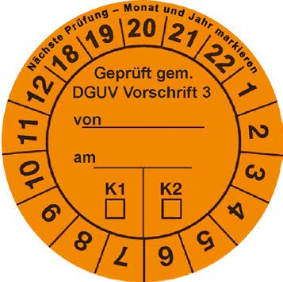
Abb. 22 In der Praxis hat sich die Kennzeichnung geprüfter Anlagen und Betriebsmittel mit Prüfplaketten bewährt.
Maßnahmen bei engen und leitfähigen Umgebungen
Da die elektrische Gefährdung der Körperdurchströmung in leitfähigen Umgebungen mit begrenzter Bewegungsfreiheit durch Schutzmaßnahmen mit Schaltelementen nicht beherrscht werden können, betreiben Sie Ihre Arbeitsmittel ausschließlich über Trenntransformatoren oder mit Schutzkleinspannung.
| |
|
Für jedes Arbeitsmittel muss ein separater Trenntransformator verwendet werden. |
|
3.7 Arbeiten in explosionsgefährdeten Bereichen
Wo Faulprozesse stattfinden und brennbare Flüssigkeiten, Gasen oder Dämpfe eingeleitet werden, besteht die Gefahr einer Explosion.
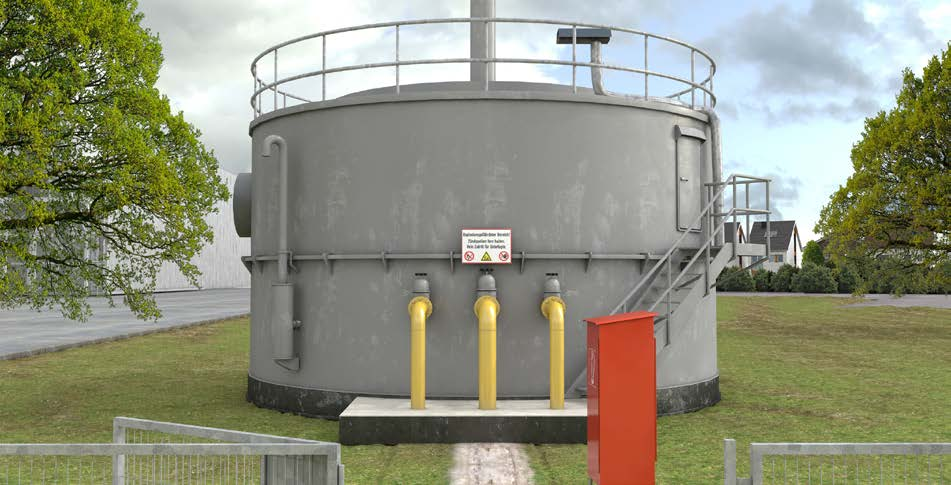
Abb. 23 Gasbehälter mit Sicherheitskennzeichnung
|
Weitere Informationen
|
- DGUV Information 213-057 "Gaswarneinrichtungen und -geräte für den Explosionsschutz – Einsatz und Betrieb" (Merkblatt T 023)
|
|
Gefährdungen
|
|
Bei Explosionen treten Flammen, hohe Temperaturen und vielfach auch hohe Drücke auf. Dadurch können Personen verletzt, Gebäude oder Anlagenteile zerstört werden sowie Folgebrände auftreten. Zudem können brennbare Gas- und Dampfluftgemische in Gefahr drohender Menge und Konzentration freigesetzt werden z. B. durch
- Brennbare Flüssigkeiten, Dämpfe und Gase, die von außen eingebracht werden
- Faulgas, das durch biologische Vorgänge entsteht
- Chemische Reaktion beim Vermischen von Abwässern bzw. deren Inhaltsstoffe
|
|
Maßnahmen
|
|
Verhaltensregeln in explosionsgefährdeten Bereichen
Mithilfe der Gefährdungsbeurteilung sind explosionsgefährdete Bereiche zu ermitteln und entsprechend zu kennzeichnen. Dort gelten für die Beschäftigten besondere Regeln, die in Dienst- oder Betriebsanweisungen festgelegt werden. Arbeitsplatzbezogene Unterweisungen für hier eingesetzte Personen sind dringend erforderlich.
Die Explosionsgefahr ist für die Dauer der Arbeiten nach Möglichkeit durch Maßnahmen wie beispielsweise Lüftung oder Absperrung zu vermeiden. Zur Feststellung, ob die Explosionsgefahr beseitigt ist, müssen kontinuierlich Freimessungen durchgeführt werden.
Kann für die Dauer der Arbeiten eine Explosionsgefahr nicht vollständig ausgeschlossen werden, sind weitere Maßnahmen erforderlich:
- Den Aufenthalt in explosionsgefährdeten Bereichen nur auf die Dauer der dort auszuführenden Arbeiten beschränken.
- Mögliche Zündquellen beseitigen.
- Rauchverbote einhalten.
- Geräte wie mobile Leuchten, Pumpen müssen für die vorliegende Zone geeignet sein.
- In explosionsgefährdeten Bereichen der Zone 0 und 1
- dürfen nur ableitfähiges Schuhwerk mit einem Ableitwiderstand der Person gegen Erde von höchstens 108 Ohm sowie nur elektrostatisch ableitfähige Handschuhe getragen werden,
- darf Arbeitskleidung oder Schutzkleidung nicht gewechselt, nicht aus- und nicht angezogen werden.
Für Arbeiten, die mit besonderen Gefahren verbunden sind, sind zusätzlich Erlaubnisscheine erforderlich. Dies gilt insbesondere für Arbeiten mit Zündgefahren.
Für den Notfall ist ein Alarmplan erforderlich, in dem die notwendigen Maßnahmen und Verhaltensweisen festgelegt sind. Ihre Beschäftigten sind damit vertraut und wissen, dass Flucht- und Rettungswege sowie Feuerlöscheinrichtungen im Alltag immer frei zu halten sind.

Abb. 24 Der Ex-Zonen-Plan zeigt, wo explosionsgefährdete Bereiche sind.
Ex-Zonen-Plan
Wo in Ihrer Abwasserbehandlungsanlagen explosionsgefährdete Bereiche liegen, zeigt ein Ex-Zonen-Plan.
Explosionsschutzdokument
Welche Schutzmaßnahmen konkret vor Ort durchzuführen sind, ist in einem Explosionsschutzdokument festzulegen. Stellen Sie sicher, dass es dort verfügbar und den dort tätigen Personen bekannt ist.

Abb. 25 Explosionsgefährdete Bereiche sind durch Warnzeichen und Verbotszeichen gekennzeichnet
Prüfungen
Bevor Anlagen in solchen Bereichen in Betrieb genommen werden, unterliegen sie besonderen Prüfungen – beschrieben in § 15 der Betriebssicherheitsverordnung. Auch danach sind wiederkehrende Prüfungen (§ 16) zu veranlassen.
| |
|
Stellen Sie sicher, dass die von Ihnen mit Prüfungen beauftragten Personen entsprechend befähigt sind. Beachten Sie hierbei die besonderen Bestimmungen des Anhangs 2, Abschnitt 3 der Betriebssicherheitsverordnung. |
Ex-Zonen
Explosionsgefährdete Bereiche werden nach Häufigkeit und Dauer des Auftretens gefährlicher explosionsfähiger Atmosphäre in Zonen unterteilt. Diese Einteilung dient als Grundlage für die Festlegung von Maßnahmen, insbesondere zur Vermeidung der Entzündung gefährlicher explosionsfähiger Atmosphäre.
Zone 0
Bereich, in dem gefährliche explosionsfähige Atmosphäre als Gemisch aus Luft und brennbaren Gasen, Dämpfen oder Nebeln ständig, über lange Zeiträume oder häufig vorhanden ist.
Bemerkung: Der Begriff "häufig" ist im Sinne von "zeitlich überwiegend" zu verwenden.
Zone 1
Bereich, in dem sich bei Normalbetrieb gelegentlich eine gefährliche explosionsfähige Atmosphäre als Gemisch aus Luft und brennbaren Gasen, Dämpfen oder Nebeln bilden kann.
Zone 2
Bereich, in dem bei Normalbetrieb eine gefährliche explosionsfähige Atmosphäre als Gemisch aus Luft und brennbaren Gasen, Dämpfen oder Nebeln normalerweise nicht oder aber nur kurzzeitig auftritt.
Bemerkung: Dies ist gleichbedeutend damit, dass gefährliche explosionsfähige Atmosphäre nur selten und auch nur kurzzeitig auftritt.
(gemäß Nr. 2.2 TRGS 720) |
|
3.8 Umschlossene Räume
3.8.1 Einsteigen und Arbeiten
Arbeiten in umschlossenen Räumen, wie z. B. Schächte, Kanäle, Sonderbauwerke der Abwasserableitung oder umschlossene Bauwerke der Abwasserbehandlung, sind mit einem hohen Gefährdungspotential verbunden. Prüfen Sie deshalb alle technischen Alternativen, bevor Sie Ihre Beschäftigten in solchen Räumen einsetzen.
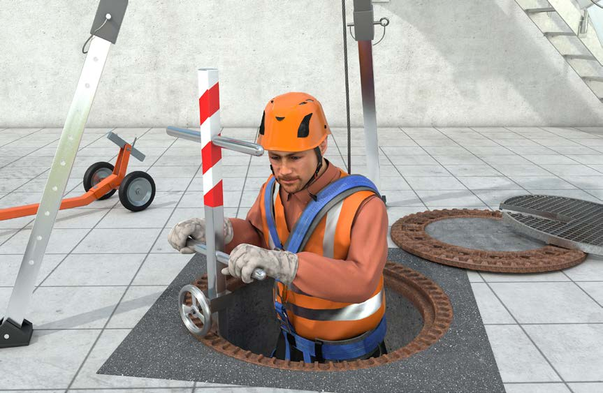
Abb. 26 Ein gut gesicherter Einstieg
|
Rechtliche Grundlagen
|
- DGUV Vorschrift 21 und 22 "Abwassertechnische Anlagen"
- DGUV Regel 103-003 und 103-004 "Arbeiten in umschlossenen Räumen von abwassertechnischen Anlagen"
- DGUV Regel 103-007 und 103-008 "Steiggänge für Behälter und umschlossene Räume"
|
|
Weitere Informationen
|
- DGUV Information 203-051 "Sicherheit und Gesundheitsschutz im Abwasserbereich – Unterweisungshilfen"
|
|
Gefährdungen
|
|
Wenn Sie Beschäftigte mit Arbeiten in umschlossenen Räumen beauftragen, ist eine gute Arbeitsvorbereitung notwendig. Stellen Sie sicher, dass ein Alarm- und Rettungsplan vorhanden und den beteiligten Personen bekannt ist.
Bedenken Sie, dass bei Arbeiten auf der Straße durch den öffentlichen Straßenverkehr eine zusätzliche Gefährdung besteht (siehe auch Kapitel 3.10 "Sicherung von Arbeitsstellen vor Gefährdungen durch den fließenden Verkehr").
Bei Arbeiten in umschlossenen Räumen ist die Umgebung selbst gefährdend: Es besteht kaum Bewegungsfreiheit und nur eine schlechte Luftzufuhr. Hinzu kommt Verletzungsgefahr durch Betriebseinrichtungen wie Schwallspüleinrichtungen, Absperrblasen, Schieber, Pumpen oder Wirbeljets.
Zudem können gefährliche Stoffe in gefahrdrohender Menge oder Konzentration durch biologische Vorgänge entstehen, zum Beispiel Faulgas (siehe Kapitel 3.8.3 "Messen – Ermittlung gefährlicher Atmosphäre") oder durch chemische Reaktionen wie beim Vermischen von Abwässern. Auch von außen können Gefahrstoffe in umschlossene Räume eindringen und zur Gefahr für dort arbeitende Personen werden.
Beim Arbeiten in umschlossenen Räumen besteht häufig Absturzgefahr, beispielsweise wenn
- keine baulichen Schutzmaßnahmen gegen Absturz vorhanden sind,
- persönliche Schutzausrüstungen gegen Absturz nicht verwendet werden,
- Einstiegshilfen nicht benutzt werden,
- Steiggänge oder Steigleitern falsch eingebaut oder beschädigt sind.
Eine weitere Gefährdung Ihrer Beschäftigten ist das Ertrinken bei stärkerer Wasserführung, plötzlich eintretendem Starkregen, Beckenentleerung oder Fremdeinleitung.
|
|
Maßnahmen
|
|
Für das Arbeiten in umschlossenen Räumen sind Betriebsanweisungen (siehe Anhang 3) unerlässlich. Darin legen Sie Maßnahmen fest, die ein sicheres Arbeiten gewährleisten. Für besondere Fälle haben Sie oder beauftragte Personen schriftliche Erlaubnisscheine auszustellen, beispielsweise aufgrund der Beschaffenheit des Bauwerkes wie große Tiefe.
Erlaubnisscheine können auch erforderlich sein, wenn bei geplanten Arbeiten besondere Gefährdungen auftreten können, wie beispielsweise beim Schweißen, Schleifen oder dem Öffnen eines geschlossenen Systems. (Erlaubnisschein siehe Anhang 2 "Arbeiten in umschlossenen Räumen").
Benennen Sie – durch eine Dienst- oder Betriebsanweisung – für Arbeiten in umschlossenen Räumen immer eine zuverlässige Person, die Gefahren einschätzen kann, die Aufsicht führt und weisungsbefugt ist. Zwingend muss eine Person über Tage als Sicherungsposten anwesend sein und gegebenenfalls sofort Rettungsmaßnahmen einleiten.
Stellen Sie eine auf das Bauwerk und die geplanten Tätigkeiten abstimmte Rettungsausrüstung zusammen (siehe Anhang 1, Übersicht Maßnahmen; Kapitel 3.8.2 "Rettung und Erste Hilfe"). Ist ein Lösen der Seilsicherung aus betrieblichen Gründen erforderlich (z. B. bei einem Aufenthalt in Räumen größerer Ausdehnung oder mit erschwerten Fluchtwegen), benötigen Ihre Beschäftigten frei tragbare, von der Umgebungsluft unabhängig wirkende Atemschutzgeräte, sogenannte Selbstretter.
Persönliche Schutzausrüstungen sind nach Erfordernis und Anweisung zu benutzen (siehe Kapitel 3.1 "Persönliche Schutzausrüstung").
Sicherung der Arbeitsstelle
Befindet sich eine Arbeitsstelle im öffentlichen Straßenverkehr, müssen Absperrungen für einen ausreichenden Abstand zwischen Einstiegsöffnungen, Lüftungsöffnungen und dem fließenden Verkehr sorgen. Machen Sie Ihren Beschäftigten klar, wie wichtig dieser Schutz ist (siehe Kapitel 3.10 "Sicherung von Arbeitsstellen vor Gefährdungen durch den fließenden Verkehr").
Absturzsicherung
Ungesicherte Einstiegsöffnungen sind eine Gefahr für Mitarbeiterinnen und Mitarbeiter. Auch unbeteiligte Personen können hineinfallen und sich schwer oder tödlich verletzen. Stellen Sie deshalb Ihren Beschäftigten Einlegroste, die gegen Verschieben gesichert sind, oder stabile Absperrungen in rot-weißem Anstrich zur Verfügung.
| |
|
Bitte beachten Sie: Flatterbänder oder Leinen sind keine stabile Absperrung. |
Sobald Ihre Beschäftigten in einen Schacht einsteigen, ist eine Persönliche Schutzausrüstung gegen Absturz notwendig, wenn eine Gefährdung durch Absturz besteht. Die Tragepflicht greift spätestens bei einer Absturzhöhe von fünf Metern.
Viele Unternehmen weisen ihre Beschäftigten an, die Persönliche Schutzausrüstung gegen Absturz bereits ab drei Meter Absturzhöhe zu tragen.
Für die Absturzsicherung muss ein geeigneter Anschlagpunkt oberhalb der Einstiegstelle vorhanden sein.
Unabhängig von der Sicherung gegen Absturz müssen Ihre Beschäftigten im Notfall gerettet werden können und deshalb immer einen Auffanggurt tragen (s. Kap. 3.8.2).
| |
|
Höhensicherungsgerät mit Rettungshubgerät in Kombination mit Auffanggurt bieten gleichzeitig Absturzsicherung und Rettungsmöglichkeit. |
Freimessen
Grundsätzlich muss vor jedem Einstieg und Eintritt in einen umschlossenen Raum von abwassertechnischen Anlagen die Atmosphäre überprüft werden und während dem Aufenthalt in diesem ständig überwacht werden (siehe Kapitel 3.8.3 "Messen – Ermittlung gefährlicher Atmosphäre").
Lüftung
In umschlossenen Räumen ist die Belüftung wichtig, um sicher und gesund arbeiten zu können. Sie erleichtert die oft körperlich anstrengende Arbeit und beugt gegen gefährliche Atmosphäre vor (siehe Kapitel 3.8.4 "Lüftung – Maßnahmen gegen gefährliche Atmosphäre").
Seilsicherung
Wer sich in umschlossen Räumen aufhält, kann sich verletzen oder das Bewusstsein verlieren. Dann kommt es darauf an, dass Sie die Weichen für eine schnelle und sichere Rettung gestellt haben.
Voraussetzung für eine funktionierende Seilsicherung ist, dass
- ein Auffanggurt bzw. Rettungsgurt getragen wird,
- zum Herausheben ein Höhensicherungsgerät mit Rettungshubeinrichtung oder ein anderes Rettungshubgerät einsatzbereit ist (Abb. 27 Gut ausgerüstet für den Einstieg in Schächte.)
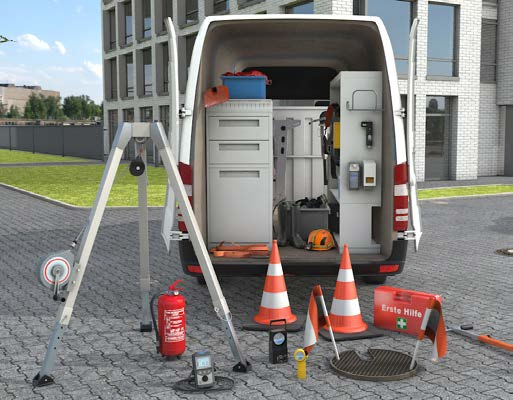
Abb. 27 Gut ausgerüstet für den Einstieg in Schächte.
Ist es auf Grund der Arbeiten erforderlich die Seilsicherung zu lösen, muss die Sicherheit auf andere Weise, z. B. durch das Mitführen von Gaswarngeräten und Atemschutzgeräten zur Selbstrettung, gewährleistet sein.
Sichtverbindung
Für die Beschäftigten in umschlossenen Räumen ist es wichtig, Kontakt zur Außenwelt zu halten - am besten durch Sicht- und Rufverbindung zum Sicherungsposten über Tage. Weitere Beschäftigte dürfen nur dann in den umschlossenen Raum folgen, wenn sie von der Person auf der Schachtsohle entsprechende Signale bekommen.
Begehbare Schächte
Lassen Sie Ihre Beschäftigten nur in Schächte einsteigen, wenn eine Einstiegshilfe vorhanden ist, beispielsweise eine Haltestange (Abb. 26: Ein gut gesicherter Einstieg) und die lichte Weite von Einstiegsöffnungen mindestens 0,8 m beträgt. Abweichend davon können Einstiegsöffnungen, die in Verkehrswegen von Fahrzeugen liegen, mindestens eine lichte Weite von 0,6 m haben. Die Rettungsmaßnahmen sind hierbei entsprechend anzupassen.
Die lichte Weite des Schachtes selbst muss mindestens einen Meter betragen. Bei 0,8 m lichte Weite ist zu prüfen, ob zur Sicherheit des Personals besondere Schutzmaßnahmen erforderlich sind wie, beispielsweise eine zusätzliche technische Lüftung.
Begehbare Kanäle
Für begehbare Kanäle gilt, dass ihre lichte Höhe mindestens 1,0 Meter betragen muss. Müssen Sie aus betriebstechnischen Gründen veranlassen, dass jemand einen Kanal mit einer lichten Höhe zwischen 0,8 bis 1,0 m begeht, ergreifen Sie zusätzliche Sicherheitsmaßnahmen wie eine ständige Seilsicherung oder eine Absperrung der Kanalstrecke.
|
3.8.2 Rettung und Erste Hilfe
Als Unternehmerin oder Unternehmer wissen Sie um die besonderen Gefährdungen in abwassertechnischen Anlagen. Insbesondere wenn Ihre Beschäftigten in umschlossene Räume einsteigen, tragen Sie eine hohe Verantwortung. Auch wenn Sie und das eingesetzte Personal alle notwendigen Schutzmaßnahmen getroffen haben, können Menschen beispielsweise in der Kanalisation in Not geraten. Dann zeigt sich, ob auch Erste Hilfe und Rettung in Ihrem Betrieb funktionieren. Oft kommt es auf Sekunden an.
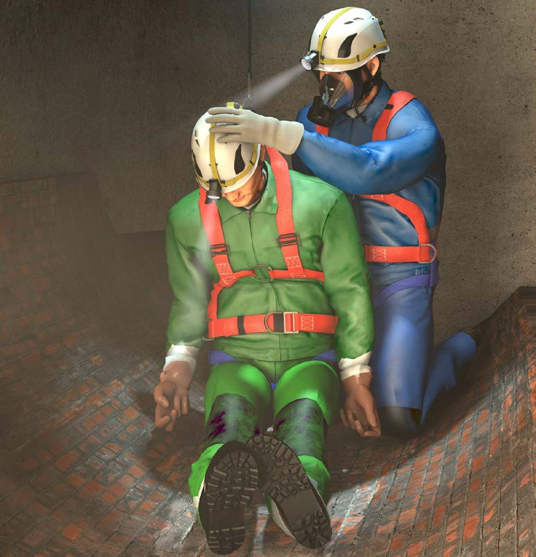
Abb. 28 Eine Person aus einem Schacht zu retten, ist nur mithilfe der Ausrüstung und geschulten Kräften machbar. Hier eine Rettung unter Atemschutz.
|
Weitere Informationen
|
- DGUV Information 204-001 "Erste Hilfe" (Plakat)
- DGUV Information 204-006 "Anleitung zur Ersten Hilfe"
- Film "Retten eines Kollegen aus der Kanalisation" der BG ETEM
|
|
Gefährdungen
|
|
Gerät eine Person in Not, braucht sie unverzüglich Hilfe und muss sofort aus dem Gefahrenbereich gerettet werden können. Die Unfallfolgen können sich verschlimmern, wenn sich Rettungsmaßnahmen aufgrund mangelhafter Organisation oder Übung verzögern. Die Beschäftigten sind überfordert und bringen sich selbst in Gefahr, wenn sie nicht über eine geeignete Ausrüstung verfügen und Erste Hilfe nicht sachgerecht leisten können.
|
|
Maßnahmen
|
|
zur Rettung aus umschlossenen Räumen von abwassertechnischen Anlagen
Allgemeines
Richten Sie die Notfall- und Rettungsmaßnahmen an Art und Umfang der Arbeiten und den örtlichen Gegebenheiten aus. Für wiederkehrende Tätigkeiten legen Sie die Maßnahmen auf Basis der Gefährdungsbeurteilung fest. Gelten für einen Arbeitsauftrag besondere Umstände, veranlassen Sie eine gesonderte Beurteilung, um die angemessenen Maßnahmen zu ermitteln.
Eine erfolgreiche Rettung hängt davon ab, ob Ihre Beschäftigten über geeignete und intakte Rettungsgeräte und Transportmittel verfügen. Sorgen Sie unbedingt dafür, dass Ihre Mitarbeiterinnen und Mitarbeiter bei einem Notfall selbst Rettungsmaßnahmen einleiten können: zunächst den Notruf über Funk oder Telefon absetzen und danach mit eigenen Rettungsmaßnahmen beginnen.
Stellen Sie deshalb sicher, dass in jeder Arbeitsgruppe mindestens ein Ersthelfer außerhalb des umschlossenen Raumes einsatzbereit ist. (Für die Organisation der Ersten Hilfe siehe Kapitel 2.1 "Was für alle gilt!")
| |
|
Lassen Sie am besten alle eingesetzten Beschäftigten zu Ersthelferinnen und Ersthelfern ausbilden, damit bei Erkrankungen oder in Urlaubszeiten kein Engpass entsteht. |
Alarm- und Rettungsplanung
Ein Alarm- und Rettungsplan sichert den reibungslosen Ablauf im Notfall. Dafür zu sorgen, gehört zu Ihren unternehmerischen Pflichten.
Rettungsübungen sind wichtig. Üben Sie mit Ihren Beschäftigten mindestens jährlich, damit im Ernstfall jeder Handgriff sitzt.
| |
|
Beteiligen Sie außerbetriebliche Rettungskräfte wie ortsansässige Feuerwehren an Übungen. |
Rettungsausrüstung
Wie die Rettungsausrüstung aussehen muss, ergibt sich aus der Gefährdungsbeurteilung. Folgende Bestandteile gehören zur Grundausrüstung und müssen in unmittelbarer Nähe einer Einstiegstelle bereitstehen, wenn diese betreten wird:
- geeignete Anschlageinrichtung wie ein Dreibock
- Persönliche Schutzausrüstungen zum Retten, z. B. mit einem Höhensicherungsgerät mit Rettungshubeinrichtung
- betriebsbereite explosionsgeschützte Handleuchte.
Je nach Einsatzbedingungen und baulichen Gegebenheiten können zusätzliche Rettungsausrüstungen erforderlich sein, beispielsweise ein frei tragbares, von der Umgebungsatmosphäre unabhängig wirkendes Atemschutzgerät, das für die Fremdrettung von Personen und für Arbeitseinsätze geeignet ist. Ebenso kann ein Schleifkorb oder eine Rettungswanne erforderlich sein, um eine Person zu retten. Zur Ausrüstung Ihrer Einsatzfahrzeuge gehören selbstverständlich ein Verbandkasten DIN 13157:2009-11 "Erste-Hilfe-Material – Verbandkasten C" und ein Feuerlöscher.
|
3.8.3 Messen – Ermittlung gefährlicher Atmosphäre
Die Atmosphäre in umschlossenen Räumen kann sich verändern, während sich Personen dort aufhalten. Deshalb sind Gasmessungen sowohl vor dem Einsteigen als auch während des Aufenthaltes angezeigt.
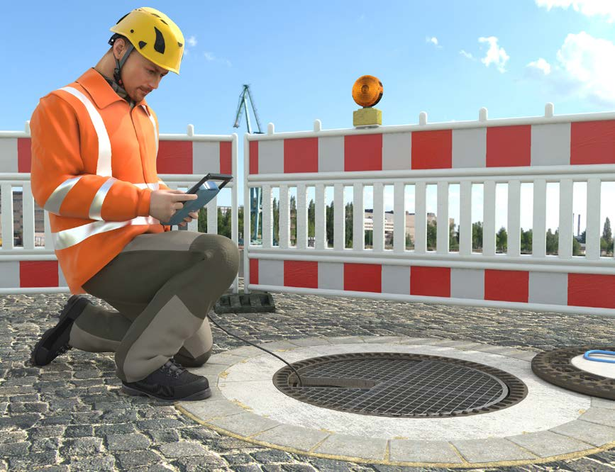
Abb. 29 Eine durch Unterweisung oder Schulung fachkundige Person übernimmt das Freimessen. Mithilfe von Ansaugschläuchen kann die Atmosphäre weiter unten geprüft werden.
|
Rechtliche Grundlagen
|
- Gefahrstoffverordnung (GefStoffV)
- DGUV Vorschrift 21 und 22 "Abwassertechnische Anlagen"
- Technische Regeln für Gefahrstoffe (TRGS)
- DGUV Regel 103-003 und 103-004 "Arbeiten in umschlossenen Räumen von abwassertechnischen Anlagen"
- DGUV Regel 113-004 und 113-005 "Behälter, Silos und enge Räume Teil 1: Arbeiten in Behältern, Silos und engen Räumen"
|
|
Weitere Informationen
|
- DGUV Information 213-056 "Gaswarneinrichtungen für toxische Gase/Dämpfe und Sauerstoff – Einsatz und Betrieb (Merkblatt T 021)
- DGUV Information 213-057 "Gaswarneinrichtungen und -geräte für den Explosionsschutz – Einsatz und Betrieb " (Merkblatt T 023)
|
|
Gefährdungen
|
|
Beschäftigte sind gefährdet, wenn in umschlossene Räume abwassertechnischer Anlagen Stoffe in Gefahr drohender Menge oder Konzentration
- von außen eingebracht werden, z. B. durch Einleitung von Gefahrstoffen
- durch biologische Vorgänge entstehen, z. B. durch Gärung und Fäulnis
- durch chemische Reaktionen entstehen, z. B. beim Vermischen von Abwässern.
Gefährliche Atmosphäre kann insbesondere entstehen durch
- entzündbare Gase oder Dämpfe, z. B. Benzindämpfe, Faulgas
- Sauerstoffmangel durch Sauerstoffzehrung und/oder Verdrängung
- akut toxische oder gesundheitsgefährdende Stoffe, z. B. Schwefelwasserstoff
- Kohlendioxid.
|
|
Maßnahmen
|
|
zur Rettung aus umschlossenen Räumen von abwassertechnischen Anlagen
Einsatz von Messgeräten
Stellen Sie Ihrem Personal kontinuierlich messende, direktanzeigende Mehrfach-Gaswarngeräte zur Verfügung, die mindestens geeignet sind für die Messung von Sauerstoff, Kohlenstoffdioxid, Schwefelwasserstoff und explosionsfähiger Atmosphäre.
| |
|
Lassen Sie – unabhängig von der Gerätewartung – unmittelbar vor jedem Einsatz des Messgerätes ein Test gemäß Herstellerangaben auf sichere Funktion durchführen. |
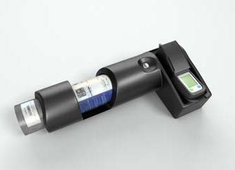
Abb. 30 Vor jedem Einsatz der Messgeräte ist ein Funktionstest nötig.
Ermittlung gefährlicher Atmosphäre
Stellen Sie sicher, dass vor dem Einsteigen grundsätzlich Messungen von einem sicheren Standort aus durchgeführt werden, zum Beispiel von Schachteinstiegen über Tage aus.
Zum Messgerät passende Ansaugschläuche und Gasförderpumpen lassen die Entnahme von Gasproben aus tiefer gelegenen Stellen zu.
In umschlossene Räume von abwassertechnischen Anlagen darf nur eingestiegen und gearbeitet werden, wenn durch Messung festgestellt wird, dass
- der Sauerstoffgehalt nicht weniger als 20,9 Vol. % beträgt
- die Konzentration brennbarer Gase und Dämpfe unter 10 % der unteren Explosionsgrenze (UEG) liegt.
- die Konzentration giftiger Gase wie Schwefelwasserstoff, Kohlendioxid unterhalb des Arbeitsplatzgrenzwertes liegt.
Nach dem Einsteigen in den Arbeitsbereich wird durch kontinuierliche Messungen ausgeschlossen, dass sich unbemerkt eine gefährliche Atmosphäre entwickeln kann.
Hinweis:
Die Ermittlung von Krankheitskeimen in gesundheitsschädlicher Konzentration ist derzeit vor Ort nicht möglich.
Organisatorische Maßnahmen
Bei der Vorbereitung zum Einsteigen in umschlossene Räume setzen Sie als Unternehmerin oder Unternehmer eine Aufsicht führende Person ein. Diese ist erfahren genug, um zu entscheiden, ob für die Arbeiten zusätzlich ein Erlaubnisschein erforderlich wird. Aufgrund der Ergebnisse von Kontrollmessungen entscheidet sie zudem, ob Arbeiten abzubrechen oder besondere Schutzmaßnahmen zu treffen sind, beispielsweise zusätzliche Lüftung oder der Einsatz von Atemschutzgeräten.
Achten Sie darauf, dass die mit den Messungen beauftragten Beschäftigten in der Handhabung und Funktionsprüfung der Geräte unterwiesen sind und Messergebnisse richtig beurteilen können. Machen Sie klar, dass Kontrollmessungen dokumentiert werden müssen, wenn eine gefährliche Atmosphäre festgestellt wird.
Die Instandhaltung von Messgeräten ist durch sachkundiges Personal zu organisieren. Da die Instandhaltungsarbeiten nach Herstellerangaben durchzuführen sind, kann die Sachkunde in der Regel durch Teilnahme an speziellen Gerätewart-Lehrgängen der Hersteller erworben werden.
|
3.8.4 Lüftung – Maßnahmen gegen gefährliche Atmosphäre
Durch Belüftung abwassertechnischer Anlagen kann gefährliche Atmosphäre vermieden werden – und damit eine Gefährdung für Beschäftigte.
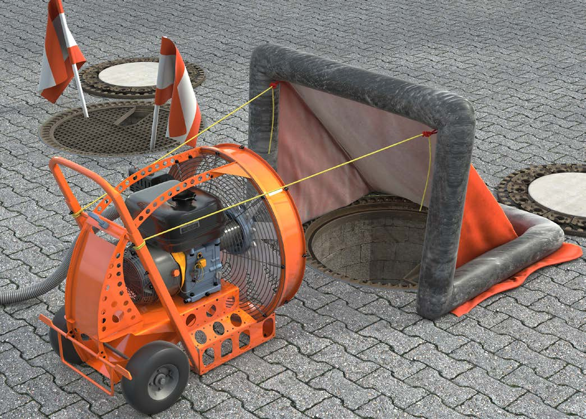
Abb. 31 Mit einer technischen Lüftung wird eine gefährliche Atmosphäre beseitigt.
|
Gefährdungen
|
|
Beschäftigte sind gefährdet, wenn in umschlossene Räume abwassertechnischer Anlagen Stoffe in entsprechender Menge oder Konzentration
- von außen eingebracht werden, z. B. durch Einleitung von Gefahrstoffen
- durch biologische Vorgänge entstehen, z. B. durch Gärung und Fäulnis
- durch chemische Reaktionen entstehen, z. B. beim Vermischen von Abwässern.
Beispiele:
- Gase oder Dämpfe, durch die Brände oder Explosionen entstehen können, z. B. Methan, Benzindämpfe
- akut toxische oder gesundheitsgefährdende Stoffe, z. B. Schwefelwasserstoff und Kohlendioxid
- Sauerstoffmangel, der zum Ersticken führen kann
|
|
Maßnahmen
|
|
Lüftungsmaßnahmen
Unter günstigen Umständen kann die natürliche Lüftung eines umschlossenen Raumes für Ihre Arbeiten ausreichend sein. Wenn natürliche Lüftung nicht ausreicht, sind technische Lüftungsmaßnahmen erforderlich.
In Dienst-/Betriebsanweisungen können Sie objektbezogen festlegen, ob und welche Lüftungsmaßnahmen zu treffen sind.
Lüftungsmaßnahmen sind ausreichend, wenn
- die Sauerstoffkonzentration 20,9 Vol.-% beträgt
- die Konzentration brennbarer Gase und Dämpfe unter zehn Prozent der unteren Explosionsgrenze (UEG) liegt
- die Konzentration giftiger Gase und Dämpfe unterhalb der jeweiligen Arbeitsplatzgrenzwerte (AGW) liegt.
Vor dem Einsteigen und während der Arbeiten müssen kontinuierliche Messungen durchführt werden (siehe Kapitel 3.8.3 "Messen – Ermittlung gefährlicher Atmosphäre").
Natürliche Lüftung
Natürliche Lüftung kann aufgrund der örtlichen Bedingungen, zum Beispiel in Regenwasserkanälen ohne Ablagerungen bzw. nach vorhergehender Hochdruckreinigung, ausreichend sein. Die Schachtdeckel benachbarter Schächte vor dem Einstieg eine Zeitlang zu öffnen, kann für eine ausreichende Durchlüftung sorgen.
Zur Kontrolle wird die Atmosphäre vor dem Einstieg und während der Arbeiten gemessen. Unter anderem können die Lage von Schächten, die Beschaffenheit von Abdeckungen und das Gefälle der Kanalstrecke die natürliche Lüftung beeinflussen.
Erfahrungsgemäß sind die Lüftungsverhältnisse in Pumpensümpfen und Gruben schlechter als im Kanal.
Technische Lüftung
Eine wirksame Luftzufuhr können Sie für Ihre Beschäftigten im Regelfall nur durch Belüftung (blasende Lüftung) sicherstellen. Es besteht bei saugender Lüftung die Gefahr, dass gesundheitsschädliche oder explosionsfähige Gase zur Arbeitsstelle hin gesogen werden. Deshalb ist die saugende Lüftung für den Abwasserbereich ungeeignet.
Wählen Sie die Ansaugstelle des Belüftungsgerätes so, dass unbelastete Luft angesaugt wird.
| |
|
Wichtig ist, dass die technische Lüftung so lange in Betrieb zu halten ist, wie sich Beschäftigte in umschlossenen Räumen aufhalten. |
Technische Lüftung ist ausreichend bei einem
- Luftstrom von mindestens 600 m3/Stunde und m2 Kanalquerschnitt
- sechs- bis achtfachen Luftwechsel pro Stunde in sonstigen umschlossenen Räumen, z. B. Schächten, Pumpensümpfen und Regenbecken.
|
3.9 Sicheres Arbeiten mit Rohrabsperrgeräten
Häufig ist es notwendig, einen Leitungsabschnitt abzusperren. Keine einfache Aufgabe. Denn durch das unkontrollierte Verschieben oder das Platzen eines Rohrabsperrgerätes können Personen verletzt werden.
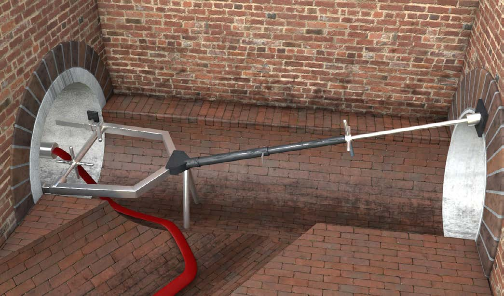
Abb. 32 Die Ausschubsicherung verhindert das Verrutschen der Kanalblase.
|
Weitere Informationen
|
- DGUV Information 201-022 "Handlungsanleitung für die Arbeit mit Geräten zur provisorischen Rohrabsperrung"
- DGUV Information 201-052 "Rohrleitungsbauarbeiten"
- Bedienungsanleitung des Herstellers
|
|
Gefährdungen
|
|
Bei Arbeiten in abwassertechnischen Anlagen muss häufig zu Inspektionszwecken oder zur Instandhaltung der Abwasserzufluss unterbrochen werden. Um dieses zu erreichen, werden Absperrgeräte zur provisorischen Absperrung z. B. Rohrabsperrblasen, mechanische Rohrabsperrgeräte eingesetzt.
Gefährdungen für Beschäftigte können sich unter anderem ergeben, wenn
- der zulässige Betriebsdruck überschritten wird
- sich das Rohrabsperrgerät verschiebt bzw. verschieben kann
- Rohrabsperrblasen platzen.
|
|
Maßnahmen
|
|
Allgemeines
Der Arbeitgeber hat beim Einsatz von Rohrabsperrgeräten sowohl im Hinblick auf die abzusperrende Rohrleitung als auch bei der Auswahl von Rohrabsperrgeräten mehrere Aspekte zu berücksichtigen.
Rohrleitung
Die Rohrabsperrgeräte müssen in Form, Größe/Durchmesser zur abzusperrenden Leitung passen. Die Rohrinnenwand im Einsatzbereich des Rohrabsperrgerätes muss frei von Verunreinigungen und Ablagerungen sein, damit das Absperrgerät nicht beschädigt wird und dicht abschließt.
Die Rohrleitung im Einsatzbereich des Rohrabsperrgerätes ist auf augenfällige Mängel (z. B. Risse, Grate, hervorstehende Bau- oder Montageteile) und Stabilität zu untersuchen. Gegebenenfalls müssen z. B. Unebenheiten, Ablagerungen, Grate, Hindernisse entfernt werden.
Der zulässige Leitungsdruck darf nicht überschritten werden (z. B. Angaben des Rohrherstellers, Höhendifferenz zwischen Tief- und Hochschacht). Nicht überdeckte Leitungen müssen gegebenenfalls gegen unzulässig axiale Bewegung gesichert werden.
Rohrabsperrgerät
Für die Auswahl der Rohrabsperrgeräte sind ausschlaggebend:
- Form und Beschaffenheit der abzusperrenden Leitung
- Rohrdurchmesser
- Leitungsdruck
Weiterhin sind die Kenndaten der Rohrabsperrgeräte festzustellen – Querschnittsform, Größe, Nennweite sowie maximal zulässiger Geräteinnendruck und maximal zulässiger Leitungsdruck.
Zum Befüllen von pneumatischen Rohrabsperrgeräten sind Sicherheitsventile und Manometer zu verwenden.
Einbau des Rohrabsperrgerätes
Die Rohrabsperrgeräte müssen außerhalb der Rohrleitung auf Beschädigung und Dichtheit kontrolliert werden. Sie dürfen nur an den vom Hersteller vorgesehenen Punkten angeschlagen und abgelassen werden.
Stellen Sie z. B. durch die Unterweisung Ihrer Beschäftigten sicher, dass die Rohrabsperrgeräte auf voller Länge und achsenparallel ins Rohr eingesetzt werden. Der Dichtkörper darf zuerst nur bis zum Anliegen an die Rohrwandung gefüllt werden. Dann erfolgt der Einbau einer geeigneten formschlüssigen Sicherung gegen Ausschub und unkontrolliertes Verschieben infolge Leitungsdruck (z. B. Verbau).
Bei wiederverwendbaren Ausschubsicherungen sind die Angaben des Herstellers (z. B. Ein- und Ausbau, zulässige Kraftaufnahme) zu beachten. Bei zimmermannsmäßigen Konstruktionen ist eine Berechnung zu erstellen.
| |
|
Beim Einsatz von pneumatischen Rohrabsperrgeräten, -blasen und -kissen darf der volle Geräteinnendruck erst aufgebracht werden, wenn sich keine Personen im Gefahrenbereich aufhalten. |
Mit Luft gefüllte Absperrblasen oder Absperrkissen dürfen in umschlossenen Räumen (Rohrleitung oder Schachtbauwerk) nur dann eingesetzt werden, wenn sich innerhalb dieses umschlossenen Raumes grundsätzlich keine Beschäftigten aufhalten, die weitere Tätigkeiten ausführen.
Ausbau
Der Ausbau von Ausschubsicherung und Rohrabsperrgerät darf erst beginnen, wenn der Leitungsdruck vollständig abgebaut ist.
Prüfung
Stellen Sie sicher, dass die Geräte und Anlagen entsprechend den Einsatzbedingungen und den betrieblichen Verhältnissen mindestens jedoch einmal jährlich von einer zur Prüfung befähigten Person auf ihren arbeitssicheren Zustand geprüft werden.
|
3.10 Sicherung von Arbeitsstellen vor Gefährdungen durch den fließenden Verkehr
Gefährdungen durch den öffentlichen Straßenverkehr werden durch Sicherungsmaßnahmen im Straßenraum vermieden.
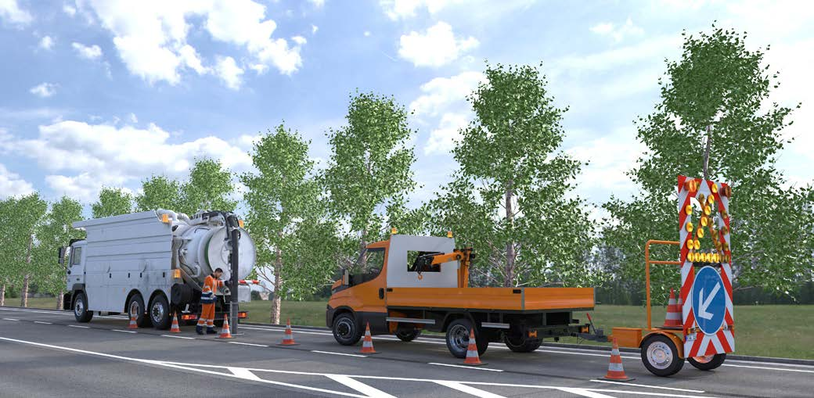
Abb. 33 Die Arbeitsstelle auf der Straße ist gesichert.
|
Weitere Informationen
|
- DGUV Information 212-016 "Warnkleidung"
- DIN EN ISO 20471:2017-03 "Hochsichtbare Warnkleidung – Prüfverfahren und Anforderungen"
- DIN 30710:1990-03 "Sicherheitskennzeichnung von Fahrzeugen und Geräten"
- Richtlinien für die Sicherung von Arbeitsstellen an Straßen (RSA 95)
- Zusätzliche Technische Vertragsbedingungen und Richtlinien für Sicherungsarbeiten an Arbeitsstellen an Straßen (ZTV-SA)
- Merkblatt über Rahmenbedingungen für erforderliche Fachkenntnisse zur Verkehrssicherung von Arbeitsstellen an Straßen (MVAS 99)
|
|
Gefährdungen
|
|
Bei Arbeiten im öffentlichen Straßenverkehr sind Ihre Beschäftigten besonderen Gefährdungen ausgesetzt.
|
|
Maßnahmen
|
|
Allgemeines
Der fließende Verkehr muss sicher an der Arbeitsstelle vorbeigeleitet werden. Veranlassen Sie, dass die Arbeitsstellen an und in abwassertechnischen Anlagen so geplant werden, dass Gefährdungen durch den fließenden Verkehr möglichst vermieden werden.
Ist dieses nicht möglich, müssen Arbeitsplätze durch Schutzeinrichtungen, z. B. transportable Schutzeinrichtungen oder Leitbaken, in Verbindung mit ausreichend bemessenen Sicherheitsabständen vor dem vorbeifließenden oder ankommenden öffentlichen Verkehr geschützt werden. Für Arbeiten, welche im Schutz der Verkehrssicherung durchgeführt werden, muss ausreichend Platz zur Verfügung stehen
Verkehrsrechtliche Anordnung
Die Verkehrssicherung erfolgt nach der Straßenverkehrs-Ordnung (StVO) in Verbindung mit den Richtlinien für die Sicherung von Arbeitsstellen an Straßen (RSA 95). Diese betreffen ausschließlich verkehrsrechtliche Regelungen.
Vor Beginn von Arbeiten, die sich auf den öffentlichen Straßenverkehr auswirken, muss eine verkehrsrechtliche Anordnung über Art und Umfang der Arbeitsstellensicherung bei der zuständigen Behörde (Straßenverkehrsbehörde, Ordnungsamt) eingeholt werden.
Bei Beantragung der Anordnung muss ein Verkehrszeichenplan vorgelegt werden (oder die Behörde erstellt selber einen). Im Verkehrszeichenplan müssen die tatsächlichen örtlichen Verhältnisse und die für die Arbeiten erforderlichen Platzverhältnisse sowie die erforderlichen Sicherheitsabstände zwischen Verkehrsbereich und Arbeitsplätzen, Fahrzeugen dargestellt/aufgeführt sein.
Weitere wichtige Angaben in der verkehrsrechtlichen Anordnung:
- Tatsächlich vorhandene Restbreiten von eingeschränkten Fahrbahnteilen
- Gültigkeitsdauer der Anordnung
- Geschwindigkeitsbeschränkungen
- Name, Anschrift und Telefon der verantwortlichen Person während und nach der Arbeitszeit
Stellen Sie sicher, dass die verkehrsrechtliche Anordnung und der angeordnete Verkehrszeichenplan/Regelplan an der Arbeitsstelle vorliegen. Lassen Sie niemals Arbeiten zu, bevor eine solche verkehrsrechtliche Anordnung vorliegt, und dulden Sie keine Abweichungen von den dort beschriebenen Maßnahmen.
Zu den Maßnahmen, die sehr zur Sicherheit Ihrer Beschäftigten beitragen, zählen Geschwindigkeitsbeschränkungen. Diese können Sie immer dann anordnen lassen, wenn Verkehrsteilnehmende oder im Arbeitsbereich Tätige gefährdet werden können. Innerorts ist häufig Tempo 30 angebracht, auf Landstraßen in der Regel 50 km/h. An besonders engen oder von der Verkehrsführung her schwierigen Stellen kann eine noch geringere Geschwindigkeit erforderlich sein.
Die in der verkehrsrechtlichen Anordnung benannte verantwortliche Person muss entsprechend geschult sein und einen Qualifikationsnachweis gemäß MVAS 99 vorweisen können.
Neben dem fließenden Verkehr arbeitende Personen
Ihre Beschäftigten brauchen ausreichend Platz: Die freie und unverstellte Fläche am Arbeitsplatz ist so zu bemessen, dass sich die Beschäftigten bei ihrer Tätigkeit ungehindert bewegen können. Der Platzbedarf eines arbeitenden Menschen ist abhängig von seiner Tätigkeit und muss im Einzelfall im Rahmen einer Gefährdungsbeurteilung ermittelt werden. Ein Planungsmaß von ca. 1,0 m hat sich bewährt.
Die Beschäftigten müssen durch transportable Schutzeinrichtungen oder Verkehrseinrichtungen (z. B. Leitbaken), jeweils in Verbindung mit Sicherheitsabständen gem. Arbeitsstättenverordnung vor heran- oder vorbeifahrenden Fahrzeugen geschützt werden.
| |
|
Eine weitere Möglichkeit, eine geschützte Fläche zu schaffen, ist das Arbeiten an der verkehrsabgewandten Seite eines Fahrzeuges. |
Bemessung des Sicherheitsabstandes
Der Sicherheitsabstand beschreibt den Abstand zwischen der freien Bewegungsfläche des arbeitenden Menschen und den äußeren Begrenzungen der vorbeifahrenden Fahrzeuge (inklusive Spiegel, Ladung etc.).
Bei der Bemessung des Sicherheitsabstandes sind z. B. folgende Kriterien zu berücksichtigen:
- Zulässige Höchstgeschwindigkeit des fließenden Verkehrs
- Kurvigkeit der Straßenführung
- Fehlende seitliche Ausweichmöglichkeiten für den vorbeifließenden Verkehr, z. B. durch Bordsteine, seitlichen Bewuchs oder Gegenverkehr
- Fahrstreifenbreiten
- Fahrzeugarten (Lkw, Pkw, Fahrzeuge mit Überbreite)
- Verkehrsdichte
- Sicht- und Witterungsverhältnisse
Wählen Sie die geeignete Schutzvorrichtung und bemessen Sie die freie Bewegungsfläche sowie den Sicherheitsabstand im Einzelfall mittels einer Gefährdungsbeurteilung. Stimmen Sie sich eng mit der zuständigen Behörde ab. Nur dort können Maßnahmen zur Lenkung und Leitung des Verkehrs angeordnet werden.
Zusätzliche Hinweise für Warnkleidung/Warnposten
Falls Ihre Mitarbeiterinnen und Mitarbeiter im Straßenraum beziehungsweise neben dem Verkehrsbereich eingesetzt sind, brauchen sie auffällige Warnkleidung mindestens der Klasse 2 entsprechend EN ISO 20471 in fluoreszierendem Orange-Rot oder Gelb. Bei erhöhter Gefährdung wie z. B. Dunkelheit, großer Verkehrsbelastung oder schlechten Sichtverhältnissen ist Warnkleidung der Klasse 3 einzusetzen.
| |
|
Ein Warnposten darf nur vor Verkehrseinschränkungen oder Gefahrenstellen warnen. Die Verkehrsregelung durch Warnposten ist Ihren Beschäftigten jedoch verboten! Diese Aufgabe bleibt der Polizei vorbehalten. |
|
3.11 Sichere Kanalreinigung/Betrieb von Kanalreinigungsfahrzeugen
Zum Reinigen der Kanalisation setzen Sie Fahrzeuge mit Sonderaufbauten ein – vorwiegend im öffentlichen Verkehrsraum. Auch hier gilt: Der Arbeitsbereich muss gesichert werden. Die Beschäftigten müssen Flüssigkeitsstrahler sicher bedienen können. Zudem gilt es, sie vor Lärm und dem Kontakt mit biologischen Arbeitsstoffen zu schützen.
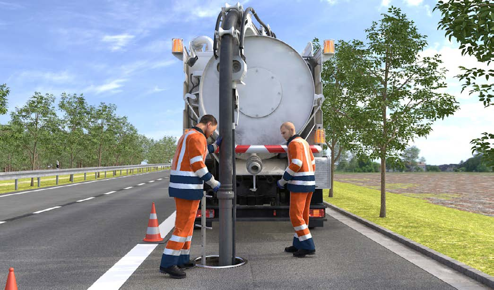
Abb. 34 Sichere Handhabung des Spülfahrzeugs
|
Weitere Informationen
|
- DGUV Information 203-051 "Sicherheit und Gesundheitsschutz im Abwasserbereich"
- Bedienungsanleitungen und Betriebsanweisungen für die jeweiligen Betriebsmittel.
|
|
Gefährdungen
|
|
Bei diesen Tätigkeiten sind Ihre Beschäftigten gefährdet durch
- den Straßenverkehr, wenn Arbeitsstellen im Straßenraum nicht ausreichend gesichert sind
- Sprung aus der Fahrerkabine
- Absturz, wenn
- in Schächte eingestiegen werden muss
- Öffnungen nicht gesichert sind
- Tätigkeiten auf hoch gelegenen Arbeitsplätzen von Fahrzeugen ohne Schutzmaßnahmen ausgeführt werden.
- Hochdruck-Wasserstrahlen, wenn
- Schläuche platzen
- Pumpen zu früh eingeschaltet oder nicht rechtzeitig abgeschaltet werden.
- kraftbetriebene Arbeitseinrichtungen des Fahrzeugaufbaus
- heiße Oberflächen
- bewegliche Fahrzeugaufbauten
- elektrischen Strom, wenn in der Nähe elektrischer Freileitungen gearbeitet wird
- Ansaugen von Körperteilen bei Unterdruck
- Biostoffe aus dem Abwasser und in Aerosolen
- durch Lärm.
|
|
Maßnahmen
|
|
Arbeitsstellen im Straßenverkehr
Siehe "Richtlinien für die Sicherung von Arbeitsstellen an Straßen" (RSA 95) und Kapitel 3.10 "Sicherung von Arbeitsstellen vor Gefährdungen durch den fließenden Verkehr".
Absturz
- Unterweisen Sie Beschäftigte, dass sie zum Erreichen oder Verlassen der Arbeitsplätze auf Fahrzeugen Aufstiege und Haltegriffe benutzen.
- Beschäftigte müssen klappbare oder versenkbare Geländer, Haltegriffe, Laufstege, Stand- und Arbeitsflächen sowie abnehmbare Absturzsicherungen für das Begehen der Arbeitsplätze auf Fahrzeugen bestimmungsgemäß verwenden.
Hochdruck-Wasserstrahler
Beim Einsatz von Schläuchen und Lanzen zur Rohrreinigung soll eine sichtbare Markierung den Austritt der Düse anzeigen. Dadurch stellen Sie sicher, dass bei der Verwendung von Schläuchen zur Rohrreinigung ein unbeabsichtigter Austritt der Düse aus dem Schacht verhindert ist.
Vor Arbeitsbeginn sind Schlauchleitungen auf sichtbare Schäden zu überprüfen. Beim Reinigen von Kanalrohren ist sicherzustellen, dass sich die Düse weit genug in dem Rohr befindet, bevor die Hochdruckpumpe eingeschaltet wird. Wo mit Schlauchleitungen gearbeitet wird, können diese eingeklemmt oder überfahren werden. Umlenkrollen helfen, mit den Schläuchen schonend umzugehen. Stellen Sie diese Arbeitsmittel zur Verfügung und sorgen Sie für Unterweisung des Personals.
Schläuche dürfen nur von einer vom Unternehmen bestimmten Person mit den notwendigen Kenntnissen eingebunden werden.
Kraftbetriebene Arbeitseinrichtungen
Machen Sie Ihrem Personal deutlich, dass es den Spülschlauch beim kraftbetriebenen Aufhaspeln nicht durch die Hände laufen lässt.
Beim Betrieb von fahrzeugeigenen Hebezeugen darf die zulässige Tragfähigkeit nicht überschritten werden. Wichtig ist auch, dass der Saugschlauchausleger nicht als Kran benutzt wird.
Heiße Oberflächen
Stellen Sie sicher, dass heiße metallische Oberflächen wie Abgasrohre und Druckleitungen nicht berührt werden können.
Fahrzeugaufbauten
Untersagen Sie grundsätzlich den Aufenthalt unter angehobenen Teilen des Aufbaus (z. B. gekippter Behälter, geöffnete Heckklappe). Geben Sie Anweisung, nach Ende der Reinigungsarbeiten und vor Beginn der Weiterfahrt alle Teile des Aufbaus in der Transportstellung zu sichern.
Elektrischer Strom
Bei Arbeiten im Bereich elektrischer Freileitungen ist ein Sicherheitsabstand von mindestens 5 m bei unbekannter Spannung einzuhalten. Das gilt insbesondere beim Heben und Schwenken des Saugschlauchauslegers und beim Ankippen des Behälters.
Unterdruck
Klären Sie Ihr Personal darüber auf, dass Körperteile am Ende des Saugschlauchs eingesaugt werden können. Deshalb ist ein ausreichender Sicherheitsabstand einzuhalten.
Biostoffe
Stellen Sie zur Steuerung des Kanalspülvorgangs eine Fernbedienung zur Verfügung, damit Ihre Beschäftigten einen ausreichenden Abstand zum geöffneten Schacht einhalten können. Weisen Sie darauf hin, dass auf die Windrichtung geachtet werden muss, damit die Einwirkung von Aerosolen reduziert wird. Vor dem Erreichen des Schachtes muss der Spüldruck vermindert werden.
Geben Sie Ihren Beschäftigten ausreichend Möglichkeiten, die Hände zu reinigen. Stellen Sie einen Trinkwasservorrat mit Zapfstelle am Fahrzeug sowie Hautreinigungs-/Desinfektionsmittel zur Verfügung.
Sorgen Sie dafür, dass die Fahrzeugkabinen arbeitstäglich gereinigt werden.
Lärm
Lärm bekämpfen Sie am besten durch technische Maßnahmen an der Quelle. Ein guter Tipp ist, Schachtöffnungen zum Teil wieder abzudecken. Durch die Benutzung der oben erwähnten Fernbedienung können Ihre Beschäftigten einen Abstand zur Lärmquelle einhalten.
|